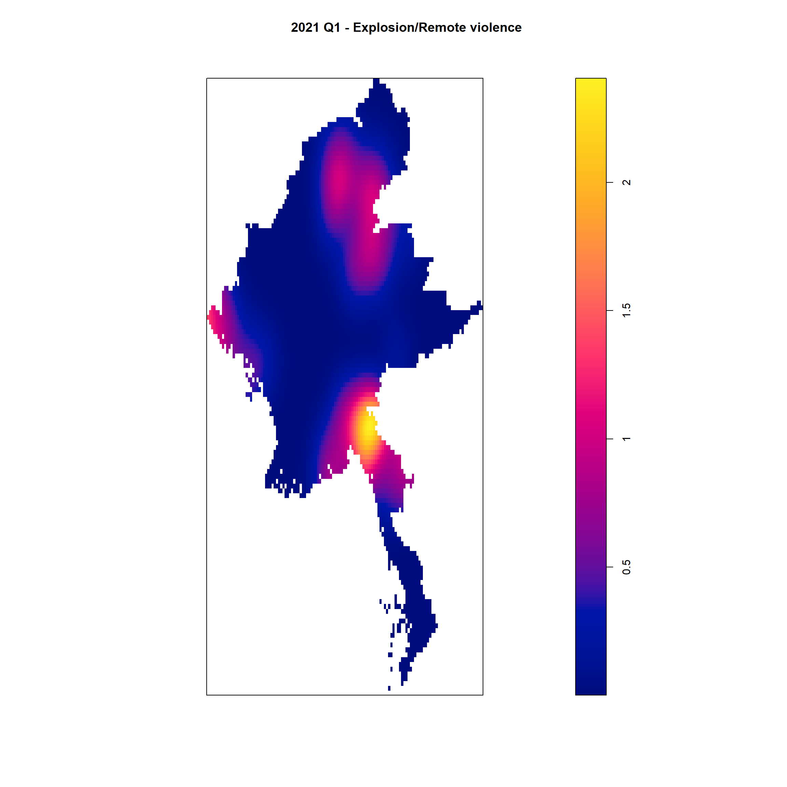
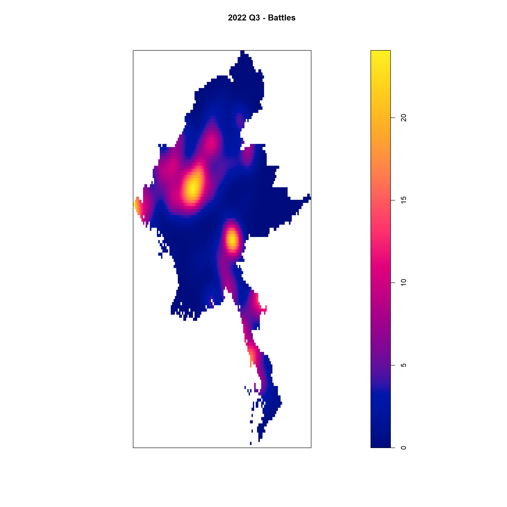

pacman::p_load(sf, raster, spatstat, tmap, tidyverse, RColorBrewer)Take-home Exercise 1: Geospatial Analytics for Social Good: Application of Spatial and Spatio-temporal Point Patterns Analysis to discover the geographical distribution of Armed Conflict in Myanmar
Analysis
R
sf
tidyverse
raster
spatstat
tmap
tidyverse
1.1 Exercise Overview
Millions of people have their lives shattered by armed conflict – wars – every year.
Armed conflict has been on the rise since about 2012, after a decline in the 1990s and early 2000s. First came conflicts in Libya, Syria and Yemen, triggered by the 2011 Arab uprisings. Libya’s instability spilled south, helping set off a protracted crisis in the Sahel region. A fresh wave of major combat followed: the 2020 Azerbaijani-Armenian war over the Nagorno-Karabakh enclave, horrific fighting in Ethiopia’s northern Tigray region that began weeks later, the conflict prompted by the Myanmar army’s 2021 power grab and Russia’s 2022 assault on Ukraine. Add to those 2023’s devastation in Sudan and Gaza. Around the globe, more people are dying in fighting, being forced from their homes or in need of life-saving aid than in decades.
In this study, I will apply spatial point patterns analysis methods to discover the spatial and spatio-temporal distribution of armed conflict in Myanmar.
1.2 Data Acquisition
The data sets that we will be using are the following: - Armed conflict data of Myanmar between 2021-2024. This data can be downloaded from Armed Conflict Location & Event Data ACLED, an independent, impartial, international non-profit organization collecting data on violent conflict and protest in all countries and territories in the world, should be used. - The shapefile of the Myanmar State and Region Boundaries with Sub-regions. This data can be downloaded from Myanmar Information Management Unit, MIMU.
1.3 Getting Started
For this exercise, the following R packages will be used:
sf for handling geospatial data.
spatstat, a comprehensive package for point pattern analysis. We’ll use it to perform first- and second-order spatial point pattern analyses and to derive kernel density estimation (KDE) layers.
raster, a package for reading, writing, manipulating, and modeling gridded spatial data (rasters). We will use it to convert image outputs generated by spatstat into raster format.
tmap, a package for creating high-quality static and interactive maps, leveraging the Leaflet API for interactive visualizations.
tidyverse for performing data science tasks such as importing, wrangling and visualising data.
RColorBrewer for creating nice looking color palettes especially for thematic maps.
As readr, tidyr and dplyr are part of tidyverse package. The code chunk below will suffice to install and load the required packages in RStudio.
To install and load these packages into the R environment, we use the p_load function from the pacman package:
1.4 Importing Data into R
Next, we will import the ACLED-Southeast_Asia-Myanmar(1).csv file into the R environment and save it into an R dataframe called acled_sf. The task can be performed using the read_csv() function from the readr package, as shown below:
acled_sf <- read_csv("data/ACLED-Southeast_Asia-Myanmar(1).csv") %>%
st_as_sf(coords = c(
"longitude", "latitude"), crs = 4326) %>%
st_transform(crs= 32647)%>%
mutate(event_date = dmy(event_date)) %>%
mutate(quarter = paste0(year, " Q", quarter(event_date)))
Notes
We used the mutate() function to ensure that the event_data column is in the right format of dmy(), while also creating a quarter column to represent the current
We can check the validity of the imported dataset, ensuring that it is in the right format with the st_crs() and summary() function:
st_crs(acled_sf)Coordinate Reference System:
User input: EPSG:32647
wkt:
PROJCRS["WGS 84 / UTM zone 47N",
BASEGEOGCRS["WGS 84",
ENSEMBLE["World Geodetic System 1984 ensemble",
MEMBER["World Geodetic System 1984 (Transit)"],
MEMBER["World Geodetic System 1984 (G730)"],
MEMBER["World Geodetic System 1984 (G873)"],
MEMBER["World Geodetic System 1984 (G1150)"],
MEMBER["World Geodetic System 1984 (G1674)"],
MEMBER["World Geodetic System 1984 (G1762)"],
MEMBER["World Geodetic System 1984 (G2139)"],
ELLIPSOID["WGS 84",6378137,298.257223563,
LENGTHUNIT["metre",1]],
ENSEMBLEACCURACY[2.0]],
PRIMEM["Greenwich",0,
ANGLEUNIT["degree",0.0174532925199433]],
ID["EPSG",4326]],
CONVERSION["UTM zone 47N",
METHOD["Transverse Mercator",
ID["EPSG",9807]],
PARAMETER["Latitude of natural origin",0,
ANGLEUNIT["degree",0.0174532925199433],
ID["EPSG",8801]],
PARAMETER["Longitude of natural origin",99,
ANGLEUNIT["degree",0.0174532925199433],
ID["EPSG",8802]],
PARAMETER["Scale factor at natural origin",0.9996,
SCALEUNIT["unity",1],
ID["EPSG",8805]],
PARAMETER["False easting",500000,
LENGTHUNIT["metre",1],
ID["EPSG",8806]],
PARAMETER["False northing",0,
LENGTHUNIT["metre",1],
ID["EPSG",8807]]],
CS[Cartesian,2],
AXIS["(E)",east,
ORDER[1],
LENGTHUNIT["metre",1]],
AXIS["(N)",north,
ORDER[2],
LENGTHUNIT["metre",1]],
USAGE[
SCOPE["Navigation and medium accuracy spatial referencing."],
AREA["Between 96°E and 102°E, northern hemisphere between equator and 84°N, onshore and offshore. China. Indonesia. Laos. Malaysia - West Malaysia. Mongolia. Myanmar (Burma). Russian Federation. Thailand."],
BBOX[0,96,84,102]],
ID["EPSG",32647]]summary(acled_sf) event_id_cnty event_date year time_precision
Length:78002 Min. :2021-01-01 Min. :2021 Min. :1.000
Class :character 1st Qu.:2022-01-16 1st Qu.:2022 1st Qu.:1.000
Mode :character Median :2022-10-14 Median :2022 Median :1.000
Mean :2022-10-30 Mean :2022 Mean :1.048
3rd Qu.:2023-08-24 3rd Qu.:2023 3rd Qu.:1.000
Max. :2024-06-30 Max. :2024 Max. :3.000
disorder_type event_type sub_event_type actor1
Length:78002 Length:78002 Length:78002 Length:78002
Class :character Class :character Class :character Class :character
Mode :character Mode :character Mode :character Mode :character
assoc_actor_1 inter1 interaction civilian_targeting
Length:78002 Min. :1.000 Min. :10.00 Length:78002
Class :character 1st Qu.:1.000 1st Qu.:13.00 Class :character
Mode :character Median :2.000 Median :17.00 Mode :character
Mean :3.028 Mean :18.14
3rd Qu.:3.000 3rd Qu.:17.00
Max. :8.000 Max. :80.00
iso region country admin1
Min. :104 Length:78002 Length:78002 Length:78002
1st Qu.:104 Class :character Class :character Class :character
Median :104 Mode :character Mode :character Mode :character
Mean :104
3rd Qu.:104
Max. :104
admin2 admin3 location geo_precision
Length:78002 Length:78002 Length:78002 Min. :1.000
Class :character Class :character Class :character 1st Qu.:1.000
Mode :character Mode :character Mode :character Median :1.000
Mean :1.489
3rd Qu.:2.000
Max. :3.000
source source_scale notes fatalities
Length:78002 Length:78002 Length:78002 Min. : 0.000
Class :character Class :character Class :character 1st Qu.: 0.000
Mode :character Mode :character Mode :character Median : 0.000
Mean : 1.385
3rd Qu.: 1.000
Max. :201.000
tags timestamp population_best geometry
Length:78002 Min. :1.611e+09 Min. : 0 POINT :78002
Class :character 1st Qu.:1.702e+09 1st Qu.: 1209 epsg:32647 : 0
Mode :character Median :1.714e+09 Median : 7254 +proj=utm ...: 0
Mean :1.702e+09 Mean : 32071
3rd Qu.:1.719e+09 3rd Qu.: 35385
Max. :1.725e+09 Max. :607268
NA's :25174
quarter
Length:78002
Class :character
Mode :character
We then import the boundaries and regions of Myanmar using the st_read() function to import the mmr_polbnda2_adm1_250k_mimu_1 shapefile into R as a simple feature data frame named regions_sf:
regions_sf <- st_read(dsn = "data/myanmar",
layer = "mmr_polbnda2_adm1_250k_mimu_1")Reading layer `mmr_polbnda2_adm1_250k_mimu_1' from data source
`C:\Users\blzll\OneDrive\Desktop\Y3S1\IS415\Quarto\IS415\Take-home_ex\data\myanmar'
using driver `ESRI Shapefile'
Simple feature collection with 18 features and 6 fields
Geometry type: MULTIPOLYGON
Dimension: XY
Bounding box: xmin: 92.1721 ymin: 9.696844 xmax: 101.17 ymax: 28.54554
Geodetic CRS: WGS 84regions_sf <- st_transform(regions_sf, crs = 32647)
Notes
The acled_sf and regions_sf data are being transformed to EPSG 32647, which corresponds to UTM Zone 47N. This CSR is fine for Myanmar. This consistency also ensures that the UTM zone transformation makes sense for the study area, and prevents any distortion in KDE results.
After importing the boundary and region data, we can check that what was imported is correct by checking the summary and plotting the views:
summary(regions_sf) OBJECTID ST ST_PCODE ST_RG
Min. : 1.00 Length:18 Length:18 Length:18
1st Qu.: 5.25 Class :character Class :character Class :character
Median : 9.50 Mode :character Mode :character Mode :character
Mean : 9.50
3rd Qu.:13.75
Max. :18.00
ST_MMR PCode_V geometry
Length:18 Min. :9.4 MULTIPOLYGON :18
Class :character 1st Qu.:9.4 epsg:32647 : 0
Mode :character Median :9.4 +proj=utm ...: 0
Mean :9.4
3rd Qu.:9.4
Max. :9.4 num_colors <- length(unique(regions_sf$ST))
colors <- brewer.pal(n = num_colors, name = "Set1")
tm_shape(regions_sf) +
tm_polygons(col = "ST", palette = colors) +
tm_text("ST", size = 0.9, col = "black", bg.color = "white",
just = c("center", "center"), xmod = 0, ymod = 0) +
tm_layout(main.title = "Region and Boundaries in Myanmar",
main.title.position = "center",
main.title.size = 1.6,
legend.outside = TRUE,
frame = TRUE) +
tm_legend(title = "Sub-regions")
1.4.1 Focused Event Types
For the study, we focus on the following four event types from the ACLED dataset for Myanmar:
Battles
Strategic developments
Violence against civilians
Explosion/Remote violence
The study period spans from January 2021 to June 2024, broken down into quarterly intervals. We aim to visualize and analyze the spatial distribution of these armed conflict events in Myanmar.
The following function is used to generate spatial point pattern plots for each event type within the defined region throughout the stated time span:
# Function to create combined events object with owin object
plot_event_by_quarter <- function(event_data, event_name) {
quarter_data_ppp <- as.ppp(st_coordinates(event_data), st_bbox(event_data))
regions_owin <- as.owin(regions_sf)
quarter_data_regions_ppp = quarter_data_ppp[regions_owin]
plot(quarter_data_regions_ppp,
main = paste("Events in Myanmar -", event_name, "(2021 - 2024)"),
xlab = "Longitude", ylab = "Latitude")
}# Get a list of unique quarters
events <- unique(acled_sf$event_type)
# Loop over each quarter and generate the plot
map(events, ~ {
event_data <- acled_sf %>% filter(event_type == .x)
plot_event_by_quarter(event_data, .x)
})

[[1]]
Symbol map with constant values
cols: #00000033
[[2]]
Symbol map with constant values
cols: #00000033
[[3]]
Symbol map with constant values
cols: #00000033
[[4]]
Symbol map with constant values
cols: #000000331.5 Determining KDE Layer
1.5.1 Choosing sample dataset
In this section, we focus on determining the appropriate Kernel Density Estimate (KDE) layer format for analyzing the spatial distribution of events across different quarters and event types. KDE is a fundamental tool for identifying patterns of spatial clustering and dispersion, providing a smooth surface that highlights areas of high and low event concentration. The selection of an appropriate bandwidth is crucial, as it influences the level of detail and accuracy in the density estimate. By standardizing the KDE layer format, we aim to ensure consistency and comparability throughout the analysis, particularly using the Violence against civilians event type as a reference for refining our approach.
Example <- "Violence against civilians"
acled_2021 <- acled_sf %>%
filter(event_type == Example & year == 2021)
year_data <- as_Spatial(acled_2021)
regions <- as_Spatial(regions_sf)
year_data_sp <- as(year_data, "SpatialPoints")
regions_sp <- as(regions, "SpatialPolygons")
year_data_ppp <- as.ppp(st_coordinates(acled_2021), st_bbox(acled_2021))
year_data_pppPlanar point pattern: 3754 points
window: rectangle = [-191409.1, 591875.9] x [1132472.1, 3042960.3] unitsany(duplicated(year_data_ppp))[1] TRUEAs there are duplicate points, we will use jittering to slightly displace the points so that overlapping points are separated on the map. The jitter parameter will slightly move each point by a small, random amount. This can help to visually separate points that are in the same space.
year_data_ppp_jit <- rjitter(year_data_ppp,
retry=TRUE,
nsim=1,
drop=TRUE)
any(duplicated(year_data_ppp_jit))[1] FALSE1.5.2 Creating owin object
To confine analysis to a geographical area, convert the SpatialPolygon object to an owin object of spatstat:
regions_owin <- as.owin(regions_sf)
year_data_regions_ppp = year_data_ppp_jit[regions_owin]
summary(year_data_regions_ppp)Planar point pattern: 3721 points
Average intensity 5.556107e-09 points per square unit
Coordinates are given to 15 decimal places
Window: polygonal boundary
1345 separate polygons (783 holes)
vertices area relative.area
polygon 1 (hole) 4 -2.89739e-02 -4.33e-14
polygon 2 (hole) 5 -7.39370e-02 -1.10e-13
polygon 3 (hole) 6 -1.08246e-01 -1.62e-13
polygon 4 (hole) 13 -3.27066e-01 -4.88e-13
polygon 5 (hole) 3 -3.55720e-07 -5.31e-19
polygon 6 (hole) 4 -3.29535e-08 -4.92e-20
polygon 7 (hole) 4 -2.72345e-07 -4.07e-19
polygon 8 (hole) 3 -4.10226e-07 -6.13e-19
polygon 9 (hole) 4 -1.83634e-06 -2.74e-18
polygon 10 (hole) 3 -1.86294e-06 -2.78e-18
polygon 11 (hole) 4 -2.01188e-06 -3.00e-18
polygon 12 (hole) 3 -6.89672e-11 -1.03e-22
polygon 13 (hole) 4 -1.94084e-06 -2.90e-18
polygon 14 (hole) 4 -4.15521e-06 -6.20e-18
polygon 15 (hole) 3 -1.67824e-07 -2.51e-19
polygon 16 (hole) 4 -5.10103e-07 -7.62e-19
polygon 17 (hole) 3 -5.71908e-08 -8.54e-20
polygon 18 (hole) 4 -9.56472e-07 -1.43e-18
polygon 19 (hole) 3 -1.67010e-06 -2.49e-18
polygon 20 (hole) 3 -7.14373e-07 -1.07e-18
polygon 21 (hole) 4 -5.48471e-08 -8.19e-20
polygon 22 (hole) 4 -9.63973e-07 -1.44e-18
polygon 23 (hole) 3 -3.04045e-06 -4.54e-18
polygon 24 (hole) 4 -4.06661e-07 -6.07e-19
polygon 25 (hole) 3 -1.83329e-13 -2.74e-25
polygon 26 (hole) 5 -6.85239e-10 -1.02e-21
polygon 27 (hole) 4 -1.18031e-06 -1.76e-18
polygon 28 (hole) 4 -9.56264e-11 -1.43e-22
polygon 29 (hole) 6 -7.03445e-06 -1.05e-17
polygon 30 (hole) 4 -4.35634e-07 -6.50e-19
polygon 31 (hole) 4 -3.67731e-07 -5.49e-19
polygon 32 (hole) 11 -1.82960e-05 -2.73e-17
polygon 33 (hole) 10 -4.44947e-06 -6.64e-18
polygon 34 (hole) 4 -5.06848e-07 -7.57e-19
polygon 35 (hole) 16 -2.17406e-06 -3.25e-18
polygon 36 (hole) 4 -4.01576e-06 -6.00e-18
polygon 37 (hole) 4 -3.55001e-07 -5.30e-19
polygon 38 (hole) 4 -9.82088e-07 -1.47e-18
polygon 39 (hole) 4 -4.41915e-10 -6.60e-22
polygon 40 (hole) 3 -4.10023e-09 -6.12e-21
polygon 41 (hole) 4 -5.97298e-08 -8.92e-20
polygon 42 26 2.85778e+06 4.27e-06
polygon 43 (hole) 7 -5.98527e-06 -8.94e-18
polygon 44 (hole) 5 -1.11940e-06 -1.67e-18
polygon 45 (hole) 3 -6.94332e-09 -1.04e-20
polygon 46 (hole) 5 -4.91071e-06 -7.33e-18
polygon 47 (hole) 4 -3.51438e-07 -5.25e-19
polygon 48 (hole) 3 -6.99415e-08 -1.04e-19
polygon 49 (hole) 4 -1.11326e-08 -1.66e-20
polygon 50 (hole) 3 -6.10517e-07 -9.12e-19
polygon 51 (hole) 3 -2.24607e-07 -3.35e-19
polygon 52 (hole) 4 -8.02093e-07 -1.20e-18
polygon 53 (hole) 3 -9.66907e-08 -1.44e-19
polygon 54 (hole) 4 -4.37363e-06 -6.53e-18
polygon 55 (hole) 3 -1.70717e-07 -2.55e-19
polygon 56 (hole) 4 -3.07590e-06 -4.59e-18
polygon 57 (hole) 3 -1.99408e-07 -2.98e-19
polygon 58 (hole) 6 -1.63617e-06 -2.44e-18
polygon 59 (hole) 3 -3.06785e-07 -4.58e-19
polygon 60 (hole) 3 -1.56131e-07 -2.33e-19
polygon 61 (hole) 7 -1.79876e-06 -2.69e-18
polygon 62 (hole) 11 -1.65937e-05 -2.48e-17
polygon 63 (hole) 4 -1.42725e-06 -2.13e-18
polygon 64 (hole) 6 -1.33879e-06 -2.00e-18
polygon 65 (hole) 3 -3.98058e-07 -5.94e-19
polygon 66 (hole) 3 -4.46005e-07 -6.66e-19
polygon 67 (hole) 12 -2.05767e-05 -3.07e-17
polygon 68 (hole) 3 -2.92851e-07 -4.37e-19
polygon 69 (hole) 6 -7.37176e-07 -1.10e-18
polygon 70 (hole) 4 -3.81552e-07 -5.70e-19
polygon 71 (hole) 4 -1.67713e-06 -2.50e-18
polygon 72 (hole) 6 -3.03661e-06 -4.53e-18
polygon 73 (hole) 16 -1.79219e-05 -2.68e-17
polygon 74 (hole) 4 -1.03552e-06 -1.55e-18
polygon 75 (hole) 4 -1.01406e-06 -1.51e-18
polygon 76 (hole) 4 -8.65300e-07 -1.29e-18
polygon 77 (hole) 3 -5.38141e-07 -8.04e-19
polygon 78 (hole) 4 -1.48789e-06 -2.22e-18
polygon 79 (hole) 4 -2.04242e-06 -3.05e-18
polygon 80 (hole) 3 -1.01252e-06 -1.51e-18
polygon 81 (hole) 3 -1.59017e-07 -2.37e-19
polygon 82 (hole) 4 -1.48988e-06 -2.22e-18
polygon 83 (hole) 3 -1.48101e-07 -2.21e-19
polygon 84 (hole) 7 -2.30688e-06 -3.44e-18
polygon 85 (hole) 10 -9.86116e-06 -1.47e-17
polygon 86 (hole) 6 -3.90621e-06 -5.83e-18
polygon 87 (hole) 4 -2.01296e-07 -3.01e-19
polygon 88 (hole) 6 -8.13898e-07 -1.22e-18
polygon 89 (hole) 3 -4.84979e-08 -7.24e-20
polygon 90 (hole) 4 -5.46126e-07 -8.15e-19
polygon 91 (hole) 3 -6.40553e-07 -9.56e-19
polygon 92 (hole) 4 -2.03670e-07 -3.04e-19
polygon 93 (hole) 3 -1.16077e-07 -1.73e-19
polygon 94 (hole) 4 -4.11957e-07 -6.15e-19
polygon 95 (hole) 3 -7.00399e-08 -1.05e-19
polygon 96 (hole) 4 -2.23188e-07 -3.33e-19
polygon 97 (hole) 4 -3.10997e-07 -4.64e-19
polygon 98 (hole) 6 -5.74412e-06 -8.58e-18
polygon 99 (hole) 9 -2.19427e-05 -3.28e-17
polygon 100 (hole) 3 -2.67563e-07 -4.00e-19
polygon 101 (hole) 4 -1.32715e-06 -1.98e-18
polygon 102 (hole) 6 -2.60133e-06 -3.88e-18
polygon 103 (hole) 5 -1.22958e-05 -1.84e-17
polygon 104 (hole) 3 -1.14982e-09 -1.72e-21
polygon 105 (hole) 4 -2.43524e-10 -3.64e-22
polygon 106 (hole) 3 -3.31085e-07 -4.94e-19
polygon 107 (hole) 4 -8.01372e-07 -1.20e-18
polygon 108 (hole) 4 -6.70371e-07 -1.00e-18
polygon 109 (hole) 3 -4.90978e-07 -7.33e-19
polygon 110 (hole) 4 -2.54297e-06 -3.80e-18
polygon 111 (hole) 5 -2.38956e-06 -3.57e-18
polygon 112 (hole) 4 -3.62129e-07 -5.41e-19
polygon 113 (hole) 5 -9.41057e-07 -1.41e-18
polygon 114 (hole) 3 -4.44880e-08 -6.64e-20
polygon 115 (hole) 4 -7.71257e-07 -1.15e-18
polygon 116 (hole) 6 -2.89370e-06 -4.32e-18
polygon 117 (hole) 7 -1.57765e-05 -2.36e-17
polygon 118 (hole) 4 -2.26147e-07 -3.38e-19
polygon 119 (hole) 4 -1.37331e-06 -2.05e-18
polygon 120 (hole) 4 -4.36370e-07 -6.52e-19
polygon 121 (hole) 4 -3.22896e-06 -4.82e-18
polygon 122 (hole) 4 -4.75997e-07 -7.11e-19
polygon 123 (hole) 4 -4.38715e-07 -6.55e-19
polygon 124 (hole) 6 -1.02899e-06 -1.54e-18
polygon 125 (hole) 4 -1.14855e-06 -1.71e-18
polygon 126 (hole) 3 -1.02277e-07 -1.53e-19
polygon 127 (hole) 9 -2.87716e-06 -4.30e-18
polygon 128 (hole) 3 -3.86621e-07 -5.77e-19
polygon 129 (hole) 3 -1.94296e-07 -2.90e-19
polygon 130 (hole) 7 -1.80011e-06 -2.69e-18
polygon 131 (hole) 4 -5.37691e-07 -8.03e-19
polygon 132 (hole) 3 -5.77240e-08 -8.62e-20
polygon 133 (hole) 8 -3.01954e-06 -4.51e-18
polygon 134 (hole) 6 -6.67140e-06 -9.96e-18
polygon 135 (hole) 4 -2.66412e-07 -3.98e-19
polygon 136 (hole) 3 -1.40064e-07 -2.09e-19
polygon 137 (hole) 4 -3.40782e-07 -5.09e-19
polygon 138 (hole) 6 -6.46573e-06 -9.65e-18
polygon 139 (hole) 4 -2.99274e-07 -4.47e-19
polygon 140 (hole) 3 -5.55465e-10 -8.29e-22
polygon 141 (hole) 3 -1.77354e-07 -2.65e-19
polygon 142 (hole) 3 -7.87909e-08 -1.18e-19
polygon 143 (hole) 3 -1.69698e-07 -2.53e-19
polygon 144 (hole) 7 -2.48946e-06 -3.72e-18
polygon 145 (hole) 3 -1.31588e-12 -1.96e-24
polygon 146 (hole) 4 -3.22413e-07 -4.81e-19
polygon 147 (hole) 7 -4.93484e-06 -7.37e-18
polygon 148 (hole) 3 -1.58436e-07 -2.37e-19
polygon 149 (hole) 4 -3.15509e-08 -4.71e-20
polygon 150 (hole) 3 -9.84638e-07 -1.47e-18
polygon 151 (hole) 4 -1.67312e-07 -2.50e-19
polygon 152 (hole) 3 -1.12101e-07 -1.67e-19
polygon 153 43 7.32477e+06 1.09e-05
polygon 154 (hole) 5 -5.48711e-06 -8.19e-18
polygon 155 (hole) 3 -1.30703e-06 -1.95e-18
polygon 156 (hole) 3 -3.44039e-07 -5.14e-19
polygon 157 (hole) 4 -1.67760e-06 -2.50e-18
polygon 158 (hole) 3 -6.43116e-07 -9.60e-19
polygon 159 (hole) 3 -3.47614e-08 -5.19e-20
polygon 160 (hole) 3 -1.66250e-08 -2.48e-20
polygon 161 (hole) 4 -2.13921e-06 -3.19e-18
polygon 162 (hole) 4 -4.27151e-07 -6.38e-19
polygon 163 (hole) 7 -1.19424e-06 -1.78e-18
polygon 164 (hole) 4 -7.28922e-07 -1.09e-18
polygon 165 (hole) 4 -2.02465e-06 -3.02e-18
polygon 166 (hole) 3 -4.21171e-08 -6.29e-20
polygon 167 (hole) 3 -1.12224e-08 -1.68e-20
polygon 168 103 1.86991e+07 2.79e-05
polygon 169 (hole) 3 -2.29459e-07 -3.43e-19
polygon 170 (hole) 4 -2.38485e-07 -3.56e-19
polygon 171 (hole) 6 -3.65340e-07 -5.46e-19
polygon 172 (hole) 4 -1.71122e-07 -2.56e-19
polygon 173 (hole) 5 -2.87414e-06 -4.29e-18
polygon 174 (hole) 3 -2.23174e-08 -3.33e-20
polygon 175 (hole) 3 -2.07226e-08 -3.09e-20
polygon 176 (hole) 3 -4.70001e-09 -7.02e-21
polygon 177 37 9.32316e+06 1.39e-05
polygon 178 (hole) 4 -5.81687e-07 -8.69e-19
polygon 179 3 0.00000e+00 0.00e+00
polygon 180 (hole) 8 -3.12973e-06 -4.67e-18
polygon 181 (hole) 4 -2.57791e-08 -3.85e-20
polygon 182 (hole) 3 -2.00116e-06 -2.99e-18
polygon 183 (hole) 4 -1.16159e-06 -1.73e-18
polygon 184 (hole) 3 -1.24415e-09 -1.86e-21
polygon 185 (hole) 4 -7.76199e-07 -1.16e-18
polygon 186 (hole) 4 -8.04350e-07 -1.20e-18
polygon 187 371 2.43869e+08 3.64e-04
polygon 188 297 2.84905e+08 4.25e-04
polygon 189 (hole) 3 -3.45320e-06 -5.16e-18
polygon 190 (hole) 3 -9.76936e-08 -1.46e-19
polygon 191 (hole) 4 -3.63549e-07 -5.43e-19
polygon 192 (hole) 4 -3.27706e-07 -4.89e-19
polygon 193 33 1.68222e+07 2.51e-05
polygon 194 33 4.47665e+05 6.68e-07
polygon 195 19 1.34593e+05 2.01e-07
polygon 196 39 1.36327e+06 2.04e-06
polygon 197 137 1.55547e+08 2.32e-04
polygon 198 (hole) 3 -4.67770e-09 -6.98e-21
polygon 199 (hole) 3 -8.08618e-08 -1.21e-19
polygon 200 (hole) 4 -3.87011e-06 -5.78e-18
polygon 201 36 8.76479e+06 1.31e-05
polygon 202 (hole) 4 -4.56275e-07 -6.81e-19
polygon 203 79 3.08116e+07 4.60e-05
polygon 204 (hole) 4 -5.65074e-07 -8.44e-19
polygon 205 388 2.25271e+08 3.36e-04
polygon 206 (hole) 4 -3.42368e-06 -5.11e-18
polygon 207 (hole) 3 -7.83497e-07 -1.17e-18
polygon 208 (hole) 3 -4.76203e-09 -7.11e-21
polygon 209 316 7.78512e+07 1.16e-04
polygon 210 13 1.09564e+05 1.64e-07
polygon 211 18 3.49727e+05 5.22e-07
polygon 212 31 1.23017e+06 1.84e-06
polygon 213 16 6.55537e+05 9.79e-07
polygon 214 24 8.49487e+05 1.27e-06
polygon 215 (hole) 5 -3.46963e-07 -5.18e-19
polygon 216 (hole) 4 -6.69787e-07 -1.00e-18
polygon 217 (hole) 4 -1.41603e-07 -2.11e-19
polygon 218 30 2.54436e+06 3.80e-06
polygon 219 336 4.15806e+07 6.21e-05
polygon 220 (hole) 6 -2.04487e-06 -3.05e-18
polygon 221 (hole) 4 -2.93932e-07 -4.39e-19
polygon 222 (hole) 3 -3.03547e-08 -4.53e-20
polygon 223 330 1.69190e+08 2.53e-04
polygon 224 47 1.08035e+07 1.61e-05
polygon 225 39 4.94369e+06 7.38e-06
polygon 226 (hole) 4 -9.31715e-07 -1.39e-18
polygon 227 (hole) 3 -1.61548e-12 -2.41e-24
polygon 228 (hole) 3 -1.07143e-07 -1.60e-19
polygon 229 (hole) 4 -6.10340e-07 -9.11e-19
polygon 230 23 2.72438e+06 4.07e-06
polygon 231 33 5.70263e+06 8.52e-06
polygon 232 (hole) 4 -1.12608e-07 -1.68e-19
polygon 233 (hole) 4 -8.85831e-08 -1.32e-19
polygon 234 90 4.20329e+07 6.28e-05
polygon 235 28 1.35341e+06 2.02e-06
polygon 236 225 1.08816e+08 1.62e-04
polygon 237 33 9.16670e+06 1.37e-05
polygon 238 (hole) 3 -9.13049e-09 -1.36e-20
polygon 239 (hole) 4 -4.56911e-07 -6.82e-19
polygon 240 192 7.02655e+07 1.05e-04
polygon 241 49 1.49245e+07 2.23e-05
polygon 242 98 1.79076e+07 2.67e-05
polygon 243 (hole) 4 -2.18459e-09 -3.26e-21
polygon 244 (hole) 4 -1.36504e-06 -2.04e-18
polygon 245 (hole) 5 -2.42563e-06 -3.62e-18
polygon 246 6 6.37552e+05 9.52e-07
polygon 247 (hole) 3 -2.79397e-08 -4.17e-20
polygon 248 49 1.01233e+07 1.51e-05
polygon 249 (hole) 3 -1.17677e-06 -1.76e-18
polygon 250 141 3.43053e+07 5.12e-05
polygon 251 (hole) 6 -3.18516e-06 -4.76e-18
polygon 252 195 3.24345e+07 4.84e-05
polygon 253 51 3.38313e+06 5.05e-06
polygon 254 34 2.01400e+06 3.01e-06
polygon 255 (hole) 4 -3.14136e-07 -4.69e-19
polygon 256 (hole) 3 -4.27796e-07 -6.39e-19
polygon 257 13 2.50435e+05 3.74e-07
polygon 258 9 9.04824e+04 1.35e-07
polygon 259 34 4.61794e+06 6.90e-06
polygon 260 17 4.58200e+05 6.84e-07
polygon 261 15 2.74776e+05 4.10e-07
polygon 262 (hole) 4 -2.17893e-06 -3.25e-18
polygon 263 (hole) 5 -7.02326e-06 -1.05e-17
polygon 264 21 5.34978e+05 7.99e-07
polygon 265 19 4.55347e+05 6.80e-07
polygon 266 (hole) 6 -4.09510e-06 -6.11e-18
polygon 267 71 3.42557e+06 5.11e-06
polygon 268 (hole) 3 -7.38399e-08 -1.10e-19
polygon 269 24 1.32420e+06 1.98e-06
polygon 270 15 3.26247e+05 4.87e-07
polygon 271 39 8.65790e+05 1.29e-06
polygon 272 43 1.41627e+06 2.11e-06
polygon 273 24 7.52068e+05 1.12e-06
polygon 274 96 1.32101e+07 1.97e-05
polygon 275 38 1.18003e+06 1.76e-06
polygon 276 429 5.99087e+08 8.95e-04
polygon 277 13 1.74105e+05 2.60e-07
polygon 278 19 2.52336e+05 3.77e-07
polygon 279 16 3.11495e+05 4.65e-07
polygon 280 11 9.11047e+04 1.36e-07
polygon 281 12 2.13470e+05 3.19e-07
polygon 282 17 5.82663e+05 8.70e-07
polygon 283 (hole) 4 -1.89536e-06 -2.83e-18
polygon 284 56 2.60440e+07 3.89e-05
polygon 285 107 4.91389e+06 7.34e-06
polygon 286 (hole) 7 -2.04270e-06 -3.05e-18
polygon 287 51 2.79076e+06 4.17e-06
polygon 288 (hole) 5 -1.27010e-06 -1.90e-18
polygon 289 89 1.61156e+07 2.41e-05
polygon 290 (hole) 4 -2.08446e-08 -3.11e-20
polygon 291 (hole) 3 -1.60149e-08 -2.39e-20
polygon 292 28 1.30499e+06 1.95e-06
polygon 293 (hole) 4 -5.63014e-07 -8.41e-19
polygon 294 11 1.27616e+05 1.91e-07
polygon 295 34 2.54199e+06 3.80e-06
polygon 296 27 1.72476e+06 2.58e-06
polygon 297 (hole) 3 -2.72458e-09 -4.07e-21
polygon 298 37 2.01882e+06 3.01e-06
polygon 299 (hole) 4 -5.70504e-07 -8.52e-19
polygon 300 23 1.65571e+06 2.47e-06
polygon 301 33 3.05816e+06 4.57e-06
polygon 302 (hole) 4 -8.37974e-07 -1.25e-18
polygon 303 (hole) 4 -2.08298e-07 -3.11e-19
polygon 304 (hole) 4 -2.05163e-07 -3.06e-19
polygon 305 14 3.23153e+05 4.83e-07
polygon 306 91 1.51209e+07 2.26e-05
polygon 307 12 2.42901e+05 3.63e-07
polygon 308 (hole) 3 -7.12933e-09 -1.06e-20
polygon 309 (hole) 4 -2.12296e-09 -3.17e-21
polygon 310 (hole) 5 -6.51128e-07 -9.72e-19
polygon 311 11 1.37889e+05 2.06e-07
polygon 312 (hole) 4 -7.83312e-07 -1.17e-18
polygon 313 (hole) 4 -2.15527e-07 -3.22e-19
polygon 314 (hole) 3 -2.24169e-08 -3.35e-20
polygon 315 58 2.29751e+07 3.43e-05
polygon 316 48 5.10265e+06 7.62e-06
polygon 317 22 1.30706e+06 1.95e-06
polygon 318 (hole) 4 -2.64848e-06 -3.95e-18
polygon 319 15 3.49480e+05 5.22e-07
polygon 320 (hole) 15 -2.06284e-05 -3.08e-17
polygon 321 17 1.57570e+06 2.35e-06
polygon 322 (hole) 4 -4.42575e-07 -6.61e-19
polygon 323 (hole) 4 -5.27325e-06 -7.87e-18
polygon 324 (hole) 6 -6.26349e-06 -9.35e-18
polygon 325 (hole) 4 -6.27134e-06 -9.36e-18
polygon 326 (hole) 4 -3.59342e-06 -5.37e-18
polygon 327 (hole) 4 -5.02133e-08 -7.50e-20
polygon 328 (hole) 3 -7.53308e-09 -1.12e-20
polygon 329 (hole) 4 -2.64937e-07 -3.96e-19
polygon 330 (hole) 10 -5.93010e-06 -8.85e-18
polygon 331 (hole) 3 -3.39743e-06 -5.07e-18
polygon 332 (hole) 4 -3.71039e-07 -5.54e-19
polygon 333 (hole) 21 -6.24740e-06 -9.33e-18
polygon 334 (hole) 3 -6.29672e-07 -9.40e-19
polygon 335 (hole) 4 -1.64658e-07 -2.46e-19
polygon 336 (hole) 3 -2.26368e-10 -3.38e-22
polygon 337 (hole) 3 -7.64382e-10 -1.14e-21
polygon 338 (hole) 3 -3.82634e-08 -5.71e-20
polygon 339 34 3.68725e+06 5.51e-06
polygon 340 (hole) 3 -2.04657e-07 -3.06e-19
polygon 341 (hole) 4 -4.60327e-07 -6.87e-19
polygon 342 (hole) 3 -3.46305e-07 -5.17e-19
polygon 343 (hole) 3 -2.24522e-07 -3.35e-19
polygon 344 (hole) 4 -3.10471e-07 -4.64e-19
polygon 345 (hole) 3 -1.29881e-08 -1.94e-20
polygon 346 34 5.21904e+06 7.79e-06
polygon 347 (hole) 4 -8.16830e-07 -1.22e-18
polygon 348 (hole) 4 -5.25346e-12 -7.84e-24
polygon 349 (hole) 4 -1.34474e-07 -2.01e-19
polygon 350 (hole) 4 -7.58535e-07 -1.13e-18
polygon 351 24 5.42734e+06 8.10e-06
polygon 352 (hole) 4 -3.70207e-07 -5.53e-19
polygon 353 (hole) 4 -4.44568e-07 -6.64e-19
polygon 354 (hole) 4 -1.37458e-06 -2.05e-18
polygon 355 (hole) 4 -3.82934e-06 -5.72e-18
polygon 356 (hole) 3 -1.56625e-06 -2.34e-18
polygon 357 (hole) 4 -4.24394e-08 -6.34e-20
polygon 358 (hole) 4 -7.88438e-08 -1.18e-19
polygon 359 (hole) 5 -6.25364e-07 -9.34e-19
polygon 360 (hole) 4 -4.68732e-09 -7.00e-21
polygon 361 (hole) 3 -3.01326e-07 -4.50e-19
polygon 362 (hole) 3 -2.73646e-08 -4.09e-20
polygon 363 (hole) 4 -5.74129e-07 -8.57e-19
polygon 364 422 4.66497e+08 6.97e-04
polygon 365 (hole) 5 -1.31979e-06 -1.97e-18
polygon 366 (hole) 3 -5.34019e-10 -7.97e-22
polygon 367 (hole) 3 -1.99125e-09 -2.97e-21
polygon 368 (hole) 3 -1.39870e-07 -2.09e-19
polygon 369 (hole) 3 -1.07121e-06 -1.60e-18
polygon 370 (hole) 3 -4.31047e-07 -6.44e-19
polygon 371 (hole) 4 -3.49431e-07 -5.22e-19
polygon 372 142 2.98767e+07 4.46e-05
polygon 373 (hole) 3 -2.44926e-08 -3.66e-20
polygon 374 (hole) 3 -3.19009e-08 -4.76e-20
polygon 375 (hole) 3 -2.59781e-08 -3.88e-20
polygon 376 (hole) 3 -1.22448e-07 -1.83e-19
polygon 377 132 2.18707e+07 3.27e-05
polygon 378 (hole) 3 -3.60761e-07 -5.39e-19
polygon 379 (hole) 3 -2.37207e-08 -3.54e-20
polygon 380 (hole) 4 -8.71149e-07 -1.30e-18
polygon 381 (hole) 4 -1.81852e-06 -2.72e-18
polygon 382 (hole) 3 -9.47568e-09 -1.41e-20
polygon 383 (hole) 4 -1.05268e-06 -1.57e-18
polygon 384 (hole) 9 -8.92711e-06 -1.33e-17
polygon 385 (hole) 4 -1.59532e-06 -2.38e-18
polygon 386 (hole) 5 -8.69411e-07 -1.30e-18
polygon 387 (hole) 6 -5.29194e-06 -7.90e-18
polygon 388 (hole) 12 -7.93669e-06 -1.19e-17
polygon 389 (hole) 3 -3.65933e-08 -5.46e-20
polygon 390 19 5.88230e+05 8.78e-07
polygon 391 (hole) 3 -6.88046e-08 -1.03e-19
polygon 392 22 1.77611e+06 2.65e-06
polygon 393 (hole) 4 -6.42929e-04 -9.60e-16
polygon 394 40 4.09952e+06 6.12e-06
polygon 395 (hole) 3 -2.52078e-03 -3.76e-15
polygon 396 (hole) 3 -1.14757e-07 -1.71e-19
polygon 397 28 1.47685e+06 2.21e-06
polygon 398 (hole) 4 -3.14458e-08 -4.70e-20
polygon 399 (hole) 4 -8.02831e-08 -1.20e-19
polygon 400 (hole) 8 -8.93463e-02 -1.33e-13
polygon 401 (hole) 3 -6.85896e-11 -1.02e-22
polygon 402 (hole) 4 -1.16516e-07 -1.74e-19
polygon 403 67 9.99685e+06 1.49e-05
polygon 404 (hole) 6 -3.37319e-06 -5.04e-18
polygon 405 (hole) 7 -9.81865e-07 -1.47e-18
polygon 406 (hole) 3 -6.88049e-10 -1.03e-21
polygon 407 (hole) 3 -3.18016e-08 -4.75e-20
polygon 408 (hole) 8 -6.36344e-02 -9.50e-14
polygon 409 (hole) 6 -7.57977e-02 -1.13e-13
polygon 410 (hole) 4 -5.06714e-07 -7.57e-19
polygon 411 (hole) 7 -5.87793e-06 -8.78e-18
polygon 412 (hole) 10 -2.86267e-06 -4.27e-18
polygon 413 (hole) 7 -1.06387e-06 -1.59e-18
polygon 414 (hole) 3 -4.31917e-06 -6.45e-18
polygon 415 (hole) 8 -1.08149e-06 -1.61e-18
polygon 416 (hole) 3 -1.00264e-08 -1.50e-20
polygon 417 (hole) 10 -2.61217e-06 -3.90e-18
polygon 418 (hole) 6 -1.06953e-06 -1.60e-18
polygon 419 (hole) 4 -1.90065e-07 -2.84e-19
polygon 420 (hole) 4 -2.24224e-02 -3.35e-14
polygon 421 (hole) 6 -1.09700e-07 -1.64e-19
polygon 422 (hole) 11 -2.01202e-06 -3.00e-18
polygon 423 (hole) 5 -9.35663e-02 -1.40e-13
polygon 424 (hole) 4 -5.24917e-08 -7.84e-20
polygon 425 (hole) 7 -1.21076e-06 -1.81e-18
polygon 426 (hole) 13 -1.39251e-01 -2.08e-13
polygon 427 (hole) 7 -1.46533e-01 -2.19e-13
polygon 428 (hole) 6 -7.59071e-02 -1.13e-13
polygon 429 (hole) 7 -5.15914e-03 -7.70e-15
polygon 430 (hole) 10 -4.09465e-02 -6.11e-14
polygon 431 (hole) 21 -1.86624e-01 -2.79e-13
polygon 432 (hole) 3 -1.69684e-02 -2.53e-14
polygon 433 (hole) 8 -4.08363e-02 -6.10e-14
polygon 434 (hole) 3 -1.73631e-02 -2.59e-14
polygon 435 (hole) 5 -1.41820e-02 -2.12e-14
polygon 436 (hole) 10 -6.15227e-02 -9.19e-14
polygon 437 (hole) 8 -2.90782e-02 -4.34e-14
polygon 438 (hole) 8 -6.15579e-02 -9.19e-14
polygon 439 (hole) 4 -7.46409e-04 -1.11e-15
polygon 440 (hole) 4 -1.05431e-02 -1.57e-14
polygon 441 (hole) 7 -1.72082e-06 -2.57e-18
polygon 442 (hole) 7 -2.49218e-06 -3.72e-18
polygon 443 (hole) 4 -8.25150e-03 -1.23e-14
polygon 444 (hole) 3 -2.15876e-07 -3.22e-19
polygon 445 (hole) 6 -7.79825e-07 -1.16e-18
polygon 446 (hole) 3 -2.59990e-02 -3.88e-14
polygon 447 (hole) 4 -1.96870e-02 -2.94e-14
polygon 448 (hole) 3 -9.09758e-03 -1.36e-14
polygon 449 (hole) 3 -4.01475e-05 -5.99e-17
polygon 450 (hole) 9 -2.41806e-02 -3.61e-14
polygon 451 (hole) 4 -4.08101e-08 -6.09e-20
polygon 452 3 0.00000e+00 0.00e+00
polygon 453 (hole) 7 -5.73306e-02 -8.56e-14
polygon 454 (hole) 4 -4.26735e-02 -6.37e-14
polygon 455 (hole) 3 -2.21993e-08 -3.31e-20
polygon 456 (hole) 5 -8.18708e-07 -1.22e-18
polygon 457 (hole) 7 -1.69748e-02 -2.53e-14
polygon 458 (hole) 3 -4.66468e-08 -6.97e-20
polygon 459 (hole) 3 -1.05617e-02 -1.58e-14
polygon 460 (hole) 4 -1.05444e-06 -1.57e-18
polygon 461 (hole) 4 -1.34632e-07 -2.01e-19
polygon 462 (hole) 4 -1.39750e-08 -2.09e-20
polygon 463 (hole) 4 -3.58077e-08 -5.35e-20
polygon 464 (hole) 5 -4.57466e-06 -6.83e-18
polygon 465 25 4.82266e+05 7.20e-07
polygon 466 (hole) 4 -2.04127e-07 -3.05e-19
polygon 467 (hole) 6 -3.72405e-02 -5.56e-14
polygon 468 (hole) 3 -3.37970e-07 -5.05e-19
polygon 469 (hole) 7 -3.08334e-02 -4.60e-14
polygon 470 (hole) 4 -5.73988e-08 -8.57e-20
polygon 471 (hole) 4 -6.69856e-03 -1.00e-14
polygon 472 (hole) 4 -1.15937e-02 -1.73e-14
polygon 473 (hole) 4 -6.51952e-07 -9.73e-19
polygon 474 (hole) 4 -3.11046e-03 -4.64e-15
polygon 475 (hole) 12 -1.45689e-01 -2.18e-13
polygon 476 (hole) 6 -6.22064e-07 -9.29e-19
polygon 477 (hole) 4 -1.41734e-07 -2.12e-19
polygon 478 (hole) 3 -6.12975e-07 -9.15e-19
polygon 479 (hole) 8 -6.15169e-06 -9.19e-18
polygon 480 (hole) 4 -5.64800e-02 -8.43e-14
polygon 481 (hole) 3 -1.11189e-02 -1.66e-14
polygon 482 (hole) 3 -1.66641e-07 -2.49e-19
polygon 483 (hole) 4 -2.07175e-09 -3.09e-21
polygon 484 (hole) 3 -4.92109e-08 -7.35e-20
polygon 485 (hole) 4 -2.60006e-02 -3.88e-14
polygon 486 (hole) 3 -1.01395e-11 -1.51e-23
polygon 487 (hole) 4 -2.21624e-10 -3.31e-22
polygon 488 (hole) 4 -1.05862e-07 -1.58e-19
polygon 489 (hole) 3 -1.17217e-11 -1.75e-23
polygon 490 (hole) 28 -1.79082e-01 -2.67e-13
polygon 491 (hole) 4 -1.58212e-04 -2.36e-16
polygon 492 (hole) 4 -3.64666e-07 -5.45e-19
polygon 493 (hole) 4 -9.07721e-06 -1.36e-17
polygon 494 (hole) 4 -6.73612e-03 -1.01e-14
polygon 495 16 4.14093e+05 6.18e-07
polygon 496 (hole) 4 -5.09041e-07 -7.60e-19
polygon 497 (hole) 4 -1.30783e-07 -1.95e-19
polygon 498 (hole) 4 -2.14069e-09 -3.20e-21
polygon 499 (hole) 4 -1.82795e-08 -2.73e-20
polygon 500 (hole) 4 -5.36782e-03 -8.02e-15
polygon 501 (hole) 6 -1.51450e-02 -2.26e-14
polygon 502 (hole) 4 -4.38078e-03 -6.54e-15
polygon 503 (hole) 4 -1.36409e-02 -2.04e-14
polygon 504 (hole) 4 -3.84271e-02 -5.74e-14
polygon 505 (hole) 3 -7.56650e-03 -1.13e-14
polygon 506 (hole) 3 -3.20234e-07 -4.78e-19
polygon 507 (hole) 4 -8.04110e-03 -1.20e-14
polygon 508 (hole) 6 -2.53481e-02 -3.78e-14
polygon 509 (hole) 3 -4.18749e-08 -6.25e-20
polygon 510 (hole) 4 -1.15603e-02 -1.73e-14
polygon 511 (hole) 3 -2.16578e-03 -3.23e-15
polygon 512 (hole) 4 -3.80479e-07 -5.68e-19
polygon 513 (hole) 3 -4.76364e-08 -7.11e-20
polygon 514 (hole) 4 -4.65116e-07 -6.94e-19
polygon 515 (hole) 3 -1.86664e-07 -2.79e-19
polygon 516 (hole) 3 -2.87542e-03 -4.29e-15
polygon 517 (hole) 5 -2.50764e-08 -3.74e-20
polygon 518 (hole) 6 -7.90541e-07 -1.18e-18
polygon 519 (hole) 4 -5.42478e-02 -8.10e-14
polygon 520 (hole) 3 -4.75090e-03 -7.09e-15
polygon 521 (hole) 4 -3.45047e-02 -5.15e-14
polygon 522 (hole) 6 -7.20472e-03 -1.08e-14
polygon 523 (hole) 3 -3.04805e-12 -4.55e-24
polygon 524 (hole) 4 -8.16292e-08 -1.22e-19
polygon 525 (hole) 6 -7.71308e-07 -1.15e-18
polygon 526 (hole) 4 -2.01300e-02 -3.01e-14
polygon 527 (hole) 4 -1.06474e-07 -1.59e-19
polygon 528 (hole) 6 -1.34176e-06 -2.00e-18
polygon 529 (hole) 6 -1.08555e-07 -1.62e-19
polygon 530 (hole) 3 -1.22081e-07 -1.82e-19
polygon 531 (hole) 7 -1.14683e-06 -1.71e-18
polygon 532 (hole) 3 -4.64709e-07 -6.94e-19
polygon 533 (hole) 4 -7.86243e-07 -1.17e-18
polygon 534 (hole) 9 -7.99880e-02 -1.19e-13
polygon 535 (hole) 3 -1.61996e-07 -2.42e-19
polygon 536 (hole) 6 -1.02196e-07 -1.53e-19
polygon 537 (hole) 4 -1.30938e-03 -1.96e-15
polygon 538 (hole) 4 -1.42378e-11 -2.13e-23
polygon 539 (hole) 9 -6.93637e-06 -1.04e-17
polygon 540 (hole) 9 -1.92423e-02 -2.87e-14
polygon 541 (hole) 4 -1.00754e-06 -1.50e-18
polygon 542 (hole) 3 -2.44523e-07 -3.65e-19
polygon 543 (hole) 4 -2.73889e-02 -4.09e-14
polygon 544 (hole) 4 -1.09638e-07 -1.64e-19
polygon 545 (hole) 6 -2.07150e-06 -3.09e-18
polygon 546 (hole) 5 -3.09883e-07 -4.63e-19
polygon 547 (hole) 3 -1.54562e-06 -2.31e-18
polygon 548 (hole) 3 -1.15109e-02 -1.72e-14
polygon 549 (hole) 4 -3.57695e-08 -5.34e-20
polygon 550 (hole) 5 -1.82216e-06 -2.72e-18
polygon 551 (hole) 4 -8.77810e-02 -1.31e-13
polygon 552 (hole) 7 -2.49873e-06 -3.73e-18
polygon 553 (hole) 3 -7.17116e-07 -1.07e-18
polygon 554 26 3.03928e+06 4.54e-06
polygon 555 (hole) 6 -8.99139e-02 -1.34e-13
polygon 556 (hole) 6 -1.07810e-06 -1.61e-18
polygon 557 (hole) 4 -4.49324e-07 -6.71e-19
polygon 558 (hole) 4 -1.63537e-06 -2.44e-18
polygon 559 (hole) 4 -1.66983e-08 -2.49e-20
polygon 560 (hole) 3 -1.20354e-07 -1.80e-19
polygon 561 (hole) 6 -6.18153e-06 -9.23e-18
polygon 562 (hole) 4 -3.03787e-07 -4.54e-19
polygon 563 (hole) 6 -1.02159e-06 -1.53e-18
polygon 564 (hole) 8 -2.04339e-06 -3.05e-18
polygon 565 (hole) 7 -1.69870e-01 -2.54e-13
polygon 566 (hole) 8 -7.11283e-06 -1.06e-17
polygon 567 (hole) 14 -3.82802e-06 -5.72e-18
polygon 568 (hole) 4 -2.35641e-06 -3.52e-18
polygon 569 (hole) 3 -1.51419e-07 -2.26e-19
polygon 570 (hole) 11 -1.85737e-01 -2.77e-13
polygon 571 (hole) 6 -2.18529e-06 -3.26e-18
polygon 572 (hole) 11 -4.86346e-06 -7.26e-18
polygon 573 (hole) 4 -3.83301e-07 -5.72e-19
polygon 574 (hole) 32 -8.16597e-01 -1.22e-12
polygon 575 (hole) 3 -2.74036e-07 -4.09e-19
polygon 576 (hole) 4 -1.25077e-09 -1.87e-21
polygon 577 (hole) 3 -3.99854e-08 -5.97e-20
polygon 578 (hole) 4 -2.67722e-13 -4.00e-25
polygon 579 (hole) 4 -8.73792e-08 -1.30e-19
polygon 580 (hole) 3 -7.28025e-12 -1.09e-23
polygon 581 (hole) 4 -1.73159e-07 -2.59e-19
polygon 582 (hole) 3 -1.77999e-08 -2.66e-20
polygon 583 (hole) 4 -2.22329e-08 -3.32e-20
polygon 584 (hole) 3 -1.57852e-07 -2.36e-19
polygon 585 (hole) 3 -2.88032e-09 -4.30e-21
polygon 586 (hole) 3 -1.07568e-06 -1.61e-18
polygon 587 (hole) 7 -6.59191e-02 -9.84e-14
polygon 588 (hole) 4 -1.58960e-07 -2.37e-19
polygon 589 (hole) 4 -2.73739e-07 -4.09e-19
polygon 590 (hole) 3 -1.48932e-02 -2.22e-14
polygon 591 (hole) 13 -3.56626e-01 -5.33e-13
polygon 592 (hole) 4 -3.50738e-08 -5.24e-20
polygon 593 (hole) 6 -3.99329e-06 -5.96e-18
polygon 594 (hole) 8 -4.35683e-06 -6.51e-18
polygon 595 (hole) 3 -1.64307e-06 -2.45e-18
polygon 596 (hole) 3 -2.09234e-07 -3.12e-19
polygon 597 (hole) 4 -1.29603e-07 -1.94e-19
polygon 598 14 1.53563e+05 2.29e-07
polygon 599 (hole) 6 -6.03221e-06 -9.01e-18
polygon 600 (hole) 15 -2.31620e-01 -3.46e-13
polygon 601 (hole) 4 -1.38723e-08 -2.07e-20
polygon 602 (hole) 5 -1.30592e-06 -1.95e-18
polygon 603 (hole) 4 -4.22857e-07 -6.31e-19
polygon 604 (hole) 3 -4.27362e-08 -6.38e-20
polygon 605 (hole) 4 -9.72694e-08 -1.45e-19
polygon 606 (hole) 7 -1.59277e-06 -2.38e-18
polygon 607 (hole) 4 -3.30055e-07 -4.93e-19
polygon 608 (hole) 3 -2.27202e-11 -3.39e-23
polygon 609 (hole) 6 -1.63424e-06 -2.44e-18
polygon 610 (hole) 7 -5.32246e-06 -7.95e-18
polygon 611 (hole) 7 -3.46670e-02 -5.18e-14
polygon 612 (hole) 6 -1.14747e-06 -1.71e-18
polygon 613 (hole) 3 -6.96187e-12 -1.04e-23
polygon 614 (hole) 5 -1.22481e-06 -1.83e-18
polygon 615 (hole) 7 -6.56975e-06 -9.81e-18
polygon 616 (hole) 11 -3.75831e-06 -5.61e-18
polygon 617 (hole) 9 -1.47233e-06 -2.20e-18
polygon 618 (hole) 9 -4.22533e-06 -6.31e-18
polygon 619 (hole) 13 -1.40633e-02 -2.10e-14
polygon 620 (hole) 11 -2.28017e-06 -3.40e-18
polygon 621 (hole) 4 -4.48255e-07 -6.69e-19
polygon 622 (hole) 3 -9.77849e-09 -1.46e-20
polygon 623 (hole) 4 -4.47668e-07 -6.68e-19
polygon 624 (hole) 6 -2.76240e-02 -4.12e-14
polygon 625 (hole) 3 -3.74154e-02 -5.59e-14
polygon 626 (hole) 3 -1.16808e-02 -1.74e-14
polygon 627 (hole) 10 -4.10705e-03 -6.13e-15
polygon 628 (hole) 10 -1.69077e-06 -2.52e-18
polygon 629 (hole) 3 -2.87094e-08 -4.29e-20
polygon 630 (hole) 3 -3.26602e-08 -4.88e-20
polygon 631 (hole) 3 -1.55568e-07 -2.32e-19
polygon 632 (hole) 4 -9.39130e-07 -1.40e-18
polygon 633 (hole) 4 -7.90017e-02 -1.18e-13
polygon 634 (hole) 3 -1.07902e-03 -1.61e-15
polygon 635 (hole) 3 -8.74114e-04 -1.31e-15
polygon 636 (hole) 4 -4.24113e-08 -6.33e-20
polygon 637 (hole) 5 -1.41525e-06 -2.11e-18
polygon 638 (hole) 4 -1.16350e-06 -1.74e-18
polygon 639 (hole) 3 -6.97838e-08 -1.04e-19
polygon 640 (hole) 10 -5.59537e-02 -8.35e-14
polygon 641 (hole) 4 -1.48865e-08 -2.22e-20
polygon 642 (hole) 6 -6.68506e-07 -9.98e-19
polygon 643 (hole) 3 -2.30992e-08 -3.45e-20
polygon 644 (hole) 5 -4.30820e-07 -6.43e-19
polygon 645 (hole) 4 -4.50814e-08 -6.73e-20
polygon 646 (hole) 5 -1.83919e-07 -2.75e-19
polygon 647 (hole) 8 -9.78938e-07 -1.46e-18
polygon 648 19 5.08538e+05 7.59e-07
polygon 649 (hole) 6 -1.54713e-06 -2.31e-18
polygon 650 (hole) 4 -1.45573e-02 -2.17e-14
polygon 651 16 1.80565e+05 2.70e-07
polygon 652 26 9.75091e+05 1.46e-06
polygon 653 (hole) 4 -1.26313e-06 -1.89e-18
polygon 654 (hole) 4 -1.90718e-03 -2.85e-15
polygon 655 (hole) 4 -1.07233e-07 -1.60e-19
polygon 656 (hole) 3 -7.26183e-03 -1.08e-14
polygon 657 (hole) 3 -2.76213e-10 -4.12e-22
polygon 658 (hole) 3 -2.80771e-02 -4.19e-14
polygon 659 (hole) 7 -5.31797e-03 -7.94e-15
polygon 660 (hole) 5 -4.51363e-09 -6.74e-21
polygon 661 (hole) 4 -3.64153e-07 -5.44e-19
polygon 662 (hole) 4 -1.88745e-02 -2.82e-14
polygon 663 (hole) 4 -1.01723e-07 -1.52e-19
polygon 664 (hole) 3 -1.45605e-02 -2.17e-14
polygon 665 (hole) 6 -2.86011e-06 -4.27e-18
polygon 666 (hole) 3 -2.28810e-02 -3.42e-14
polygon 667 (hole) 4 -9.08794e-08 -1.36e-19
polygon 668 (hole) 5 -1.72617e-02 -2.58e-14
polygon 669 (hole) 3 -4.96859e-03 -7.42e-15
polygon 670 (hole) 4 -1.85807e-02 -2.77e-14
polygon 671 (hole) 4 -8.61249e-03 -1.29e-14
polygon 672 (hole) 3 -1.66645e-03 -2.49e-15
polygon 673 (hole) 7 -1.66808e-02 -2.49e-14
polygon 674 (hole) 4 -1.73584e-06 -2.59e-18
polygon 675 (hole) 3 -8.26479e-08 -1.23e-19
polygon 676 (hole) 6 -1.56749e-06 -2.34e-18
polygon 677 (hole) 3 -2.86223e-09 -4.27e-21
polygon 678 (hole) 8 -1.27636e-06 -1.91e-18
polygon 679 (hole) 11 -3.66415e-06 -5.47e-18
polygon 680 (hole) 10 -3.21224e-06 -4.80e-18
polygon 681 (hole) 10 -2.58025e-06 -3.85e-18
polygon 682 (hole) 3 -1.73697e-07 -2.59e-19
polygon 683 (hole) 3 -1.38098e-08 -2.06e-20
polygon 684 (hole) 14 -2.82179e-06 -4.21e-18
polygon 685 (hole) 4 -2.41048e-07 -3.60e-19
polygon 686 (hole) 19 -6.09380e-06 -9.10e-18
polygon 687 (hole) 5 -5.81704e-07 -8.69e-19
polygon 688 (hole) 8 -2.67945e-06 -4.00e-18
polygon 689 (hole) 15 -6.54951e-06 -9.78e-18
polygon 690 (hole) 3 -2.38016e-08 -3.55e-20
polygon 691 (hole) 4 -1.05535e-06 -1.58e-18
polygon 692 (hole) 8 -3.22016e-07 -4.81e-19
polygon 693 (hole) 7 -1.49278e-06 -2.23e-18
polygon 694 (hole) 8 -2.37875e-06 -3.55e-18
polygon 695 (hole) 7 -6.28647e-07 -9.39e-19
polygon 696 (hole) 16 -4.13786e-06 -6.18e-18
polygon 697 (hole) 34 -1.71423e-05 -2.56e-17
polygon 698 (hole) 4 -1.63033e-06 -2.43e-18
polygon 699 (hole) 4 -2.10479e-07 -3.14e-19
polygon 700 (hole) 8 -5.80075e-06 -8.66e-18
polygon 701 (hole) 3 -6.63547e-08 -9.91e-20
polygon 702 (hole) 8 -6.48529e-07 -9.68e-19
polygon 703 (hole) 4 -1.22292e-06 -1.83e-18
polygon 704 (hole) 3 -3.69723e-09 -5.52e-21
polygon 705 (hole) 6 -1.48900e-06 -2.22e-18
polygon 706 (hole) 8 -1.39392e-06 -2.08e-18
polygon 707 (hole) 11 -5.05385e-06 -7.55e-18
polygon 708 (hole) 15 -9.73640e-06 -1.45e-17
polygon 709 (hole) 6 -9.42407e-07 -1.41e-18
polygon 710 (hole) 4 -4.51758e-07 -6.75e-19
polygon 711 (hole) 3 -1.40094e-08 -2.09e-20
polygon 712 (hole) 4 -5.59670e-07 -8.36e-19
polygon 713 (hole) 8 -5.07976e-07 -7.58e-19
polygon 714 (hole) 9 -2.30103e-06 -3.44e-18
polygon 715 (hole) 11 -1.85244e-06 -2.77e-18
polygon 716 (hole) 4 -4.41141e-07 -6.59e-19
polygon 717 (hole) 3 -5.14970e-09 -7.69e-21
polygon 718 (hole) 3 -1.23756e-07 -1.85e-19
polygon 719 (hole) 10 -5.08583e-06 -7.59e-18
polygon 720 (hole) 3 -3.50795e-09 -5.24e-21
polygon 721 (hole) 3 -2.55812e-08 -3.82e-20
polygon 722 (hole) 10 -2.30769e-06 -3.45e-18
polygon 723 (hole) 4 -2.79503e-07 -4.17e-19
polygon 724 (hole) 5 -4.95816e-07 -7.40e-19
polygon 725 (hole) 50 -2.64857e-05 -3.95e-17
polygon 726 (hole) 4 -8.77056e-07 -1.31e-18
polygon 727 (hole) 6 -2.22331e-06 -3.32e-18
polygon 728 (hole) 4 -2.50835e-06 -3.75e-18
polygon 729 (hole) 4 -1.17536e-07 -1.76e-19
polygon 730 (hole) 5 -1.71933e-06 -2.57e-18
polygon 731 (hole) 4 -2.01837e-06 -3.01e-18
polygon 732 (hole) 10 -3.98806e-06 -5.95e-18
polygon 733 (hole) 6 -2.21318e-06 -3.30e-18
polygon 734 (hole) 6 -8.93389e-07 -1.33e-18
polygon 735 (hole) 6 -2.07502e-06 -3.10e-18
polygon 736 (hole) 25 -1.89169e-05 -2.82e-17
polygon 737 (hole) 4 -7.39039e-08 -1.10e-19
polygon 738 (hole) 4 -1.38246e-08 -2.06e-20
polygon 739 (hole) 4 -3.40264e-07 -5.08e-19
polygon 740 (hole) 3 -1.77119e-07 -2.64e-19
polygon 741 (hole) 14 -6.84286e-06 -1.02e-17
polygon 742 (hole) 12 -4.68955e-06 -7.00e-18
polygon 743 (hole) 5 -5.12786e-07 -7.66e-19
polygon 744 (hole) 7 -6.35489e-07 -9.49e-19
polygon 745 (hole) 5 -4.23206e-07 -6.32e-19
polygon 746 (hole) 14 -5.39036e-06 -8.05e-18
polygon 747 19 2.15295e+05 3.21e-07
polygon 748 16 3.50061e+05 5.23e-07
polygon 749 (hole) 3 -1.78834e+02 -2.67e-10
polygon 750 14 2.11571e+05 3.16e-07
polygon 751 11 1.59536e+05 2.38e-07
polygon 752 111 7.35028e+07 1.10e-04
polygon 753 54 9.35305e+06 1.40e-05
polygon 754 19 6.34649e+05 9.48e-07
polygon 755 10 3.74827e+04 5.60e-08
polygon 756 13 1.37100e+05 2.05e-07
polygon 757 31 4.47193e+06 6.68e-06
polygon 758 19 1.23742e+06 1.85e-06
polygon 759 20 1.79201e+06 2.68e-06
polygon 760 16 2.19464e+05 3.28e-07
polygon 761 11 7.94092e+04 1.19e-07
polygon 762 14 1.45779e+05 2.18e-07
polygon 763 31 6.24672e+05 9.33e-07
polygon 764 11 2.29288e+04 3.42e-08
polygon 765 18 2.10998e+05 3.15e-07
polygon 766 26 2.52571e+06 3.77e-06
polygon 767 16 5.77783e+05 8.63e-07
polygon 768 26 8.87985e+05 1.33e-06
polygon 769 13 1.10557e+05 1.65e-07
polygon 770 21 9.55338e+05 1.43e-06
polygon 771 32 2.18189e+06 3.26e-06
polygon 772 18 7.64830e+05 1.14e-06
polygon 773 34 1.71336e+06 2.56e-06
polygon 774 115 9.29594e+05 1.39e-06
polygon 775 68 2.06761e+05 3.09e-07
polygon 776 40 4.87851e+06 7.28e-06
polygon 777 10 7.43137e+04 1.11e-07
polygon 778 17 5.95020e+05 8.88e-07
polygon 779 21 4.02132e+05 6.00e-07
polygon 780 21 1.09635e+06 1.64e-06
polygon 781 14 1.15356e+05 1.72e-07
polygon 782 20 3.13610e+05 4.68e-07
polygon 783 275 3.92648e+08 5.86e-04
polygon 784 16 2.19612e+05 3.28e-07
polygon 785 13 2.64858e+05 3.95e-07
polygon 786 23 1.25549e+06 1.87e-06
polygon 787 9 1.79312e+05 2.68e-07
polygon 788 15 2.93132e+05 4.38e-07
polygon 789 15 5.29892e+05 7.91e-07
polygon 790 23 4.95351e+05 7.40e-07
polygon 791 14 4.41976e+05 6.60e-07
polygon 792 19 3.32318e+05 4.96e-07
polygon 793 16 4.15914e+05 6.21e-07
polygon 794 22 5.10526e+05 7.62e-07
polygon 795 48 1.87148e+07 2.79e-05
polygon 796 18 1.62882e+06 2.43e-06
polygon 797 71 2.43615e+07 3.64e-05
polygon 798 116 5.16444e+07 7.71e-05
polygon 799 19 1.54144e+06 2.30e-06
polygon 800 11 2.01013e+05 3.00e-07
polygon 801 20 2.31201e+06 3.45e-06
polygon 802 15 5.94674e+05 8.88e-07
polygon 803 218 1.56252e+08 2.33e-04
polygon 804 162 8.80247e+07 1.31e-04
polygon 805 16 3.69968e+05 5.52e-07
polygon 806 14 1.61451e+05 2.41e-07
polygon 807 18 5.54566e+05 8.28e-07
polygon 808 19 5.07078e+05 7.57e-07
polygon 809 57 6.86475e+06 1.03e-05
polygon 810 15 6.56018e+05 9.80e-07
polygon 811 21 6.65092e+05 9.93e-07
polygon 812 15 5.97784e+05 8.93e-07
polygon 813 37 2.56010e+06 3.82e-06
polygon 814 13 1.66996e+05 2.49e-07
polygon 815 20 8.18381e+05 1.22e-06
polygon 816 21 2.89704e+06 4.33e-06
polygon 817 15 4.08213e+05 6.10e-07
polygon 818 104 4.71547e+07 7.04e-05
polygon 819 28 3.80443e+06 5.68e-06
polygon 820 67 3.17343e+07 4.74e-05
polygon 821 730 9.20735e+08 1.37e-03
polygon 822 16 2.01576e+05 3.01e-07
polygon 823 12 1.41506e+05 2.11e-07
polygon 824 15 4.92125e+05 7.35e-07
polygon 825 18 1.58128e+06 2.36e-06
polygon 826 25 1.94322e+06 2.90e-06
polygon 827 12 2.51373e+05 3.75e-07
polygon 828 412 4.47936e+08 6.69e-04
polygon 829 22 7.57105e+05 1.13e-06
polygon 830 16 6.97434e+05 1.04e-06
polygon 831 39 4.45130e+06 6.65e-06
polygon 832 13 8.83786e+05 1.32e-06
polygon 833 10 2.06200e+05 3.08e-07
polygon 834 76 3.60497e+07 5.38e-05
polygon 835 13 4.56433e+05 6.82e-07
polygon 836 28 2.30613e+06 3.44e-06
polygon 837 27 2.50338e+06 3.74e-06
polygon 838 14 4.69238e+05 7.01e-07
polygon 839 10 1.69886e+05 2.54e-07
polygon 840 16 5.42822e+05 8.11e-07
polygon 841 10 1.17633e+05 1.76e-07
polygon 842 8 7.08579e+04 1.06e-07
polygon 843 144 7.85300e+07 1.17e-04
polygon 844 37 1.93477e+06 2.89e-06
polygon 845 25 5.59996e+05 8.36e-07
polygon 846 44 2.86031e+06 4.27e-06
polygon 847 26 1.26276e+06 1.89e-06
polygon 848 149 1.37840e+08 2.06e-04
polygon 849 18 4.84958e+05 7.24e-07
polygon 850 73 2.93195e+07 4.38e-05
polygon 851 45 6.87481e+06 1.03e-05
polygon 852 64 1.80880e+07 2.70e-05
polygon 853 12 8.76879e+05 1.31e-06
polygon 854 26 2.78381e+06 4.16e-06
polygon 855 35 8.72326e+06 1.30e-05
polygon 856 53 1.06237e+07 1.59e-05
polygon 857 26 5.40467e+06 8.07e-06
polygon 858 148 1.05037e+08 1.57e-04
polygon 859 21 8.32798e+05 1.24e-06
polygon 860 21 2.23023e+06 3.33e-06
polygon 861 8 6.30805e+05 9.42e-07
polygon 862 78 3.67603e+07 5.49e-05
polygon 863 18 1.64745e+06 2.46e-06
polygon 864 58 1.31747e+07 1.97e-05
polygon 865 94 1.16837e+07 1.74e-05
polygon 866 53 3.17801e+06 4.75e-06
polygon 867 137 8.46454e+06 1.26e-05
polygon 868 23 4.36507e+05 6.52e-07
polygon 869 27 9.72136e+05 1.45e-06
polygon 870 (hole) 5 -6.97021e-07 -1.04e-18
polygon 871 (hole) 8 -3.52861e-06 -5.27e-18
polygon 872 55 1.98854e+06 2.97e-06
polygon 873 (hole) 3 -2.04762e-08 -3.06e-20
polygon 874 (hole) 4 -6.22375e-07 -9.29e-19
polygon 875 (hole) 4 -2.36873e-07 -3.54e-19
polygon 876 (hole) 10 -2.81071e-06 -4.20e-18
polygon 877 (hole) 3 -7.27160e-09 -1.09e-20
polygon 878 (hole) 4 -1.10286e-06 -1.65e-18
polygon 879 (hole) 6 -1.93232e-06 -2.89e-18
polygon 880 (hole) 4 -1.51309e-07 -2.26e-19
polygon 881 (hole) 10 -7.07665e-06 -1.06e-17
polygon 882 (hole) 6 -2.19324e-07 -3.27e-19
polygon 883 (hole) 4 -2.88552e-07 -4.31e-19
polygon 884 (hole) 4 -1.75262e-07 -2.62e-19
polygon 885 (hole) 6 -7.12345e-07 -1.06e-18
polygon 886 (hole) 4 -1.22366e-06 -1.83e-18
polygon 887 (hole) 3 -2.13831e-08 -3.19e-20
polygon 888 (hole) 4 -9.22699e-07 -1.38e-18
polygon 889 (hole) 7 -1.61583e-06 -2.41e-18
polygon 890 (hole) 4 -3.05722e-07 -4.56e-19
polygon 891 (hole) 4 -2.78836e-07 -4.16e-19
polygon 892 (hole) 10 -4.43177e-06 -6.62e-18
polygon 893 (hole) 4 -1.73147e-06 -2.59e-18
polygon 894 (hole) 5 -1.27245e-06 -1.90e-18
polygon 895 (hole) 6 -1.04516e-06 -1.56e-18
polygon 896 (hole) 10 -1.02181e-06 -1.53e-18
polygon 897 (hole) 10 -4.76338e-06 -7.11e-18
polygon 898 (hole) 3 -5.17982e-08 -7.73e-20
polygon 899 (hole) 4 -4.56779e-07 -6.82e-19
polygon 900 (hole) 14 -6.60975e-06 -9.87e-18
polygon 901 (hole) 4 -1.89112e-07 -2.82e-19
polygon 902 (hole) 3 -2.16955e-08 -3.24e-20
polygon 903 (hole) 5 -7.94332e-07 -1.19e-18
polygon 904 (hole) 4 -9.89198e-08 -1.48e-19
polygon 905 (hole) 3 -1.77373e-08 -2.65e-20
polygon 906 (hole) 4 -3.64370e-07 -5.44e-19
polygon 907 (hole) 4 -2.24606e-07 -3.35e-19
polygon 908 (hole) 8 -2.36780e-06 -3.54e-18
polygon 909 (hole) 4 -7.04234e-08 -1.05e-19
polygon 910 (hole) 5 -5.34330e-07 -7.98e-19
polygon 911 (hole) 3 -7.79609e-08 -1.16e-19
polygon 912 (hole) 4 -1.25316e-07 -1.87e-19
polygon 913 (hole) 7 -1.04799e-06 -1.56e-18
polygon 914 (hole) 10 -2.48459e-06 -3.71e-18
polygon 915 (hole) 7 -7.38000e-07 -1.10e-18
polygon 916 (hole) 7 -3.13894e-07 -4.69e-19
polygon 917 (hole) 12 -7.14816e-06 -1.07e-17
polygon 918 (hole) 6 -5.26802e-07 -7.87e-19
polygon 919 (hole) 12 -4.31344e-06 -6.44e-18
polygon 920 (hole) 5 -5.57508e-07 -8.32e-19
polygon 921 (hole) 4 -2.54699e-07 -3.80e-19
polygon 922 (hole) 4 -1.30150e-07 -1.94e-19
polygon 923 (hole) 7 -6.13772e-07 -9.16e-19
polygon 924 (hole) 7 -6.14897e-06 -9.18e-18
polygon 925 (hole) 3 -2.18561e-08 -3.26e-20
polygon 926 (hole) 3 -6.63760e-09 -9.91e-21
polygon 927 (hole) 4 -2.83899e-07 -4.24e-19
polygon 928 (hole) 8 -3.03154e-06 -4.53e-18
polygon 929 (hole) 4 -1.34999e-07 -2.02e-19
polygon 930 (hole) 4 -9.24206e-09 -1.38e-20
polygon 931 (hole) 4 -3.37664e-07 -5.04e-19
polygon 932 (hole) 4 -6.24926e-07 -9.33e-19
polygon 933 (hole) 4 -1.86883e-07 -2.79e-19
polygon 934 (hole) 5 -3.87980e-07 -5.79e-19
polygon 935 (hole) 3 -1.19726e-07 -1.79e-19
polygon 936 (hole) 3 -3.16269e-08 -4.72e-20
polygon 937 (hole) 14 -1.35927e-05 -2.03e-17
polygon 938 (hole) 4 -2.44946e-07 -3.66e-19
polygon 939 (hole) 5 -7.43645e-08 -1.11e-19
polygon 940 (hole) 3 -2.82993e-08 -4.23e-20
polygon 941 (hole) 6 -3.50049e-06 -5.23e-18
polygon 942 (hole) 3 -3.12799e-09 -4.67e-21
polygon 943 (hole) 8 -1.63751e-06 -2.45e-18
polygon 944 (hole) 3 -3.41559e-08 -5.10e-20
polygon 945 (hole) 4 -1.35920e-07 -2.03e-19
polygon 946 (hole) 6 -1.48117e-06 -2.21e-18
polygon 947 (hole) 4 -1.87856e-06 -2.81e-18
polygon 948 (hole) 5 -7.00330e-07 -1.05e-18
polygon 949 (hole) 6 -9.15044e-07 -1.37e-18
polygon 950 (hole) 4 -7.13686e-07 -1.07e-18
polygon 951 (hole) 6 -1.69196e-06 -2.53e-18
polygon 952 48 1.02651e+07 1.53e-05
polygon 953 (hole) 12 -5.63666e-06 -8.42e-18
polygon 954 (hole) 3 -6.62619e-07 -9.89e-19
polygon 955 (hole) 4 -7.51731e-07 -1.12e-18
polygon 956 (hole) 3 -4.76591e-07 -7.12e-19
polygon 957 (hole) 4 -1.39374e-06 -2.08e-18
polygon 958 (hole) 4 -3.54028e-06 -5.29e-18
polygon 959 (hole) 3 -2.20492e-09 -3.29e-21
polygon 960 (hole) 20 -1.44592e-05 -2.16e-17
polygon 961 (hole) 5 -4.19637e-07 -6.27e-19
polygon 962 (hole) 39 -1.89868e-05 -2.84e-17
polygon 963 (hole) 6 -7.08690e-07 -1.06e-18
polygon 964 (hole) 3 -5.33030e-08 -7.96e-20
polygon 965 (hole) 3 -4.18672e-08 -6.25e-20
polygon 966 (hole) 6 -1.19843e-06 -1.79e-18
polygon 967 (hole) 5 -1.19407e-07 -1.78e-19
polygon 968 (hole) 4 -7.75621e-08 -1.16e-19
polygon 969 (hole) 8 -1.14379e-06 -1.71e-18
polygon 970 (hole) 3 -2.13254e-08 -3.18e-20
polygon 971 (hole) 7 -1.65696e-07 -2.47e-19
polygon 972 (hole) 3 -1.12670e-09 -1.68e-21
polygon 973 (hole) 3 -6.74502e-09 -1.01e-20
polygon 974 (hole) 3 -8.15548e-08 -1.22e-19
polygon 975 (hole) 3 -3.27681e-09 -4.89e-21
polygon 976 (hole) 3 -1.22342e-08 -1.83e-20
polygon 977 (hole) 3 -5.54257e-11 -8.28e-23
polygon 978 (hole) 3 -3.48620e-09 -5.21e-21
polygon 979 (hole) 4 -5.48096e-07 -8.18e-19
polygon 980 (hole) 4 -6.02066e-08 -8.99e-20
polygon 981 (hole) 3 -1.26456e-08 -1.89e-20
polygon 982 (hole) 4 -6.89152e-08 -1.03e-19
polygon 983 (hole) 4 -4.57305e-07 -6.83e-19
polygon 984 (hole) 4 -7.91420e-07 -1.18e-18
polygon 985 (hole) 4 -1.33472e-06 -1.99e-18
polygon 986 15 3.16153e+05 4.72e-07
polygon 987 22 8.93201e+05 1.33e-06
polygon 988 18 2.91538e+05 4.35e-07
polygon 989 59 3.70736e+06 5.54e-06
polygon 990 11 1.55205e+05 2.32e-07
polygon 991 14 1.87401e+05 2.80e-07
polygon 992 11 6.54128e+04 9.77e-08
polygon 993 11 8.64659e+04 1.29e-07
polygon 994 12 2.25129e+05 3.36e-07
polygon 995 30 2.72178e+06 4.06e-06
polygon 996 (hole) 3 -2.26252e+00 -3.38e-12
polygon 997 180 1.80314e+07 2.69e-05
polygon 998 14 4.01942e+05 6.00e-07
polygon 999 103 1.33467e+07 1.99e-05
polygon 1000 14 2.07708e+05 3.10e-07
polygon 1001 55 4.38623e+06 6.55e-06
polygon 1002 41 4.69733e+06 7.01e-06
polygon 1003 74 3.92633e+06 5.86e-06
polygon 1004 31 2.79477e+06 4.17e-06
polygon 1005 17 8.74607e+05 1.31e-06
polygon 1006 26 4.50962e+05 6.73e-07
polygon 1007 18 1.15065e+06 1.72e-06
polygon 1008 164 1.48037e+07 2.21e-05
polygon 1009 12 3.17290e+05 4.74e-07
polygon 1010 69 2.59551e+07 3.88e-05
polygon 1011 37 7.85963e+05 1.17e-06
polygon 1012 14 3.37873e+05 5.05e-07
polygon 1013 12 1.77980e+05 2.66e-07
polygon 1014 21 6.46195e+05 9.65e-07
polygon 1015 24 2.69998e+06 4.03e-06
polygon 1016 30 1.00675e+06 1.50e-06
polygon 1017 57 4.22747e+06 6.31e-06
polygon 1018 23 8.63543e+05 1.29e-06
polygon 1019 11 2.01925e+05 3.02e-07
polygon 1020 95 2.88232e+07 4.30e-05
polygon 1021 452 9.64208e+07 1.44e-04
polygon 1022 77 1.72297e+07 2.57e-05
polygon 1023 16 3.33522e+05 4.98e-07
polygon 1024 19 6.82895e+05 1.02e-06
polygon 1025 43 3.95062e+06 5.90e-06
polygon 1026 29 1.00709e+06 1.50e-06
polygon 1027 21 8.90014e+05 1.33e-06
polygon 1028 22 7.93453e+05 1.18e-06
polygon 1029 13 4.52813e+05 6.76e-07
polygon 1030 30 1.49817e+06 2.24e-06
polygon 1031 48 4.23996e+06 6.33e-06
polygon 1032 37 1.20290e+06 1.80e-06
polygon 1033 19 4.85805e+05 7.25e-07
polygon 1034 46 2.18001e+06 3.26e-06
polygon 1035 7 1.33723e+05 2.00e-07
polygon 1036 54 1.82059e+07 2.72e-05
polygon 1037 10 8.57866e+05 1.28e-06
polygon 1038 14 1.98445e+05 2.96e-07
polygon 1039 19 4.68357e+05 6.99e-07
polygon 1040 52 8.57765e+06 1.28e-05
polygon 1041 73 7.91998e+06 1.18e-05
polygon 1042 23 8.19561e+06 1.22e-05
polygon 1043 10 1.06594e+05 1.59e-07
polygon 1044 169 1.39462e+07 2.08e-05
polygon 1045 17 2.55915e+05 3.82e-07
polygon 1046 12 1.81516e+05 2.71e-07
polygon 1047 16 3.68509e+05 5.50e-07
polygon 1048 12 1.24954e+05 1.87e-07
polygon 1049 1012 4.61886e+08 6.90e-04
polygon 1050 15 5.42647e+05 8.10e-07
polygon 1051 12 5.53088e+05 8.26e-07
polygon 1052 24 1.06455e+06 1.59e-06
polygon 1053 14 3.17038e+05 4.73e-07
polygon 1054 17 1.25559e+06 1.87e-06
polygon 1055 16 1.92407e+06 2.87e-06
polygon 1056 80 1.86306e+07 2.78e-05
polygon 1057 11 6.83880e+04 1.02e-07
polygon 1058 166 4.21470e+07 6.29e-05
polygon 1059 22 1.36174e+06 2.03e-06
polygon 1060 31 6.07363e+05 9.07e-07
polygon 1061 10 1.27067e+05 1.90e-07
polygon 1062 164 5.02951e+07 7.51e-05
polygon 1063 17 1.20798e+06 1.80e-06
polygon 1064 59 2.41720e+06 3.61e-06
polygon 1065 12 2.52952e+05 3.78e-07
polygon 1066 14 2.44407e+05 3.65e-07
polygon 1067 43 4.89177e+06 7.30e-06
polygon 1068 40 3.86642e+06 5.77e-06
polygon 1069 23 4.59203e+05 6.86e-07
polygon 1070 14 1.79442e+05 2.68e-07
polygon 1071 13 1.61191e+05 2.41e-07
polygon 1072 43 1.33365e+06 1.99e-06
polygon 1073 75 1.20247e+07 1.80e-05
polygon 1074 17 9.96466e+04 1.49e-07
polygon 1075 22 1.60660e+06 2.40e-06
polygon 1076 730 1.16983e+08 1.75e-04
polygon 1077 129 7.87539e+06 1.18e-05
polygon 1078 22 4.66256e+05 6.96e-07
polygon 1079 19 5.44519e+05 8.13e-07
polygon 1080 16 3.73911e+05 5.58e-07
polygon 1081 88 3.47678e+07 5.19e-05
polygon 1082 46 3.23711e+06 4.83e-06
polygon 1083 47 9.17482e+05 1.37e-06
polygon 1084 14 4.44869e+05 6.64e-07
polygon 1085 43 1.29527e+06 1.93e-06
polygon 1086 65 3.20974e+06 4.79e-06
polygon 1087 306 1.83695e+07 2.74e-05
polygon 1088 17 4.25486e+05 6.35e-07
polygon 1089 29 1.08467e+06 1.62e-06
polygon 1090 26 1.16602e+06 1.74e-06
polygon 1091 135 4.90655e+06 7.33e-06
polygon 1092 23 1.87723e+06 2.80e-06
polygon 1093 21 7.02338e+05 1.05e-06
polygon 1094 30 4.99970e+06 7.47e-06
polygon 1095 21 7.71571e+05 1.15e-06
polygon 1096 13 1.47832e+05 2.21e-07
polygon 1097 26 3.17307e+06 4.74e-06
polygon 1098 17 1.03642e+06 1.55e-06
polygon 1099 100 8.74537e+06 1.31e-05
polygon 1100 11 1.13950e+05 1.70e-07
polygon 1101 26 8.27840e+05 1.24e-06
polygon 1102 17 4.10882e+05 6.14e-07
polygon 1103 13 1.49250e+05 2.23e-07
polygon 1104 35 1.76408e+06 2.63e-06
polygon 1105 15 2.03390e+05 3.04e-07
polygon 1106 18 1.70982e+05 2.55e-07
polygon 1107 32 7.98599e+06 1.19e-05
polygon 1108 27 3.20839e+05 4.79e-07
polygon 1109 539 1.17139e+08 1.75e-04
polygon 1110 51 1.57614e+06 2.35e-06
polygon 1111 19 3.60772e+05 5.39e-07
polygon 1112 58 2.10060e+06 3.14e-06
polygon 1113 13 1.70224e+05 2.54e-07
polygon 1114 11 6.11736e+05 9.13e-07
polygon 1115 35 5.26152e+06 7.86e-06
polygon 1116 16 1.99371e+05 2.98e-07
polygon 1117 14 4.48979e+05 6.70e-07
polygon 1118 25 1.92913e+06 2.88e-06
polygon 1119 16 4.26157e+05 6.36e-07
polygon 1120 46 1.88229e+06 2.81e-06
polygon 1121 17 2.29456e+05 3.43e-07
polygon 1122 36 4.01418e+06 5.99e-06
polygon 1123 57 1.77153e+07 2.65e-05
polygon 1124 20 5.72298e+05 8.55e-07
polygon 1125 14 2.46782e+05 3.68e-07
polygon 1126 29 1.01300e+06 1.51e-06
polygon 1127 90 8.54955e+06 1.28e-05
polygon 1128 21 3.99098e+05 5.96e-07
polygon 1129 12 2.81650e+05 4.21e-07
polygon 1130 52 3.19337e+06 4.77e-06
polygon 1131 13 3.40300e+05 5.08e-07
polygon 1132 29 9.08533e+05 1.36e-06
polygon 1133 20 3.07393e+05 4.59e-07
polygon 1134 19 1.15906e+06 1.73e-06
polygon 1135 17 1.16182e+06 1.73e-06
polygon 1136 21 2.60877e+06 3.90e-06
polygon 1137 15 1.09001e+05 1.63e-07
polygon 1138 37 1.31921e+06 1.97e-06
polygon 1139 53 1.46854e+06 2.19e-06
polygon 1140 59 8.92822e+06 1.33e-05
polygon 1141 9 7.44981e+04 1.11e-07
polygon 1142 14 2.41462e+05 3.61e-07
polygon 1143 96 7.25940e+06 1.08e-05
polygon 1144 11 1.06055e+05 1.58e-07
polygon 1145 49 1.87834e+06 2.80e-06
polygon 1146 23 6.08310e+05 9.08e-07
polygon 1147 50 6.76488e+05 1.01e-06
polygon 1148 22 4.83089e+05 7.21e-07
polygon 1149 17 1.17278e+05 1.75e-07
polygon 1150 13 8.98786e+05 1.34e-06
polygon 1151 43 1.01757e+06 1.52e-06
polygon 1152 52 1.68377e+06 2.51e-06
polygon 1153 348 2.50314e+08 3.74e-04
polygon 1154 43 1.29120e+06 1.93e-06
polygon 1155 71 2.02836e+06 3.03e-06
polygon 1156 (hole) 4 -4.12791e+00 -6.16e-12
polygon 1157 141 4.53240e+06 6.77e-06
polygon 1158 52 3.62008e+06 5.41e-06
polygon 1159 20 7.69539e+05 1.15e-06
polygon 1160 88 8.88904e+06 1.33e-05
polygon 1161 12 1.44668e+05 2.16e-07
polygon 1162 46 2.28026e+06 3.40e-06
polygon 1163 39 4.79165e+06 7.15e-06
polygon 1164 53 2.86736e+06 4.28e-06
polygon 1165 38 3.22508e+06 4.82e-06
polygon 1166 18 4.44863e+05 6.64e-07
polygon 1167 45 1.45134e+06 2.17e-06
polygon 1168 86 2.56400e+07 3.83e-05
polygon 1169 158 1.74510e+07 2.61e-05
polygon 1170 14 2.50383e+05 3.74e-07
polygon 1171 120 7.17019e+06 1.07e-05
polygon 1172 146 2.28448e+07 3.41e-05
polygon 1173 143 2.34472e+07 3.50e-05
polygon 1174 20 3.47415e+05 5.19e-07
polygon 1175 84 3.86387e+06 5.77e-06
polygon 1176 68 1.10850e+07 1.66e-05
polygon 1177 863 7.47702e+07 1.12e-04
polygon 1178 53 7.54742e+06 1.13e-05
polygon 1179 64 2.11016e+06 3.15e-06
polygon 1180 103 1.47525e+07 2.20e-05
polygon 1181 26 3.40345e+06 5.08e-06
polygon 1182 103 8.40445e+06 1.25e-05
polygon 1183 23 4.92041e+05 7.35e-07
polygon 1184 27 5.53625e+05 8.27e-07
polygon 1185 60 3.56102e+06 5.32e-06
polygon 1186 151 1.51314e+07 2.26e-05
polygon 1187 708 4.18129e+08 6.24e-04
polygon 1188 120 1.32857e+07 1.98e-05
polygon 1189 856 2.53898e+08 3.79e-04
polygon 1190 13 2.47298e+05 3.69e-07
polygon 1191 16 7.35754e+05 1.10e-06
polygon 1192 21 5.31633e+05 7.94e-07
polygon 1193 72 1.03185e+07 1.54e-05
polygon 1194 38 1.34734e+06 2.01e-06
polygon 1195 8 4.09489e+05 6.11e-07
polygon 1196 17 2.46995e+05 3.69e-07
polygon 1197 14 1.42285e+05 2.12e-07
polygon 1198 9 1.56346e+05 2.33e-07
polygon 1199 42 5.49581e+05 8.21e-07
polygon 1200 59 1.15813e+06 1.73e-06
polygon 1201 12 1.16845e+05 1.74e-07
polygon 1202 11 6.00122e+04 8.96e-08
polygon 1203 14 1.63465e+05 2.44e-07
polygon 1204 8 4.73674e+04 7.07e-08
polygon 1205 23 6.69330e+05 9.99e-07
polygon 1206 144 6.48346e+06 9.68e-06
polygon 1207 74 4.79923e+06 7.17e-06
polygon 1208 116 1.02706e+07 1.53e-05
polygon 1209 16 2.74005e+05 4.09e-07
polygon 1210 97 4.72599e+06 7.06e-06
polygon 1211 18 6.15583e+05 9.19e-07
polygon 1212 146 1.38979e+07 2.08e-05
polygon 1213 32 1.94516e+06 2.90e-06
polygon 1214 26 9.81356e+05 1.47e-06
polygon 1215 82 4.39797e+06 6.57e-06
polygon 1216 33 9.36113e+05 1.40e-06
polygon 1217 47 1.51844e+06 2.27e-06
polygon 1218 196 2.32689e+07 3.47e-05
polygon 1219 53 1.30069e+06 1.94e-06
polygon 1220 70 1.00802e+07 1.51e-05
polygon 1221 10 5.33870e+05 7.97e-07
polygon 1222 211 2.73026e+07 4.08e-05
polygon 1223 41 1.44141e+06 2.15e-06
polygon 1224 9 5.20220e+05 7.77e-07
polygon 1225 316 6.66808e+07 9.96e-05
polygon 1226 17 7.48505e+05 1.12e-06
polygon 1227 15 1.49799e+05 2.24e-07
polygon 1228 24 4.99500e+05 7.46e-07
polygon 1229 12 2.24463e+05 3.35e-07
polygon 1230 100 1.06028e+07 1.58e-05
polygon 1231 11 1.24267e+05 1.86e-07
polygon 1232 143 1.89581e+07 2.83e-05
polygon 1233 60 7.07802e+06 1.06e-05
polygon 1234 124 1.23476e+07 1.84e-05
polygon 1235 34 5.67625e+06 8.48e-06
polygon 1236 797 1.86955e+08 2.79e-04
polygon 1237 15 7.15891e+05 1.07e-06
polygon 1238 20 1.61624e+06 2.41e-06
polygon 1239 13 1.73955e+05 2.60e-07
polygon 1240 60 2.42590e+06 3.62e-06
polygon 1241 20 3.86365e+05 5.77e-07
polygon 1242 213 3.69421e+07 5.52e-05
polygon 1243 15 4.55574e+05 6.80e-07
polygon 1244 35 1.56058e+06 2.33e-06
polygon 1245 32 1.42419e+06 2.13e-06
polygon 1246 68 2.30711e+06 3.44e-06
polygon 1247 240 5.93935e+07 8.87e-05
polygon 1248 145 1.58875e+07 2.37e-05
polygon 1249 39 3.67239e+06 5.48e-06
polygon 1250 54 3.84847e+06 5.75e-06
polygon 1251 32 1.14073e+06 1.70e-06
polygon 1252 18 3.58549e+05 5.35e-07
polygon 1253 25 8.06470e+05 1.20e-06
polygon 1254 15 2.67818e+05 4.00e-07
polygon 1255 26 1.43681e+06 2.15e-06
polygon 1256 18 3.10061e+05 4.63e-07
polygon 1257 18 4.71644e+05 7.04e-07
polygon 1258 16 5.04146e+05 7.53e-07
polygon 1259 72 7.33720e+06 1.10e-05
polygon 1260 27 1.37772e+06 2.06e-06
polygon 1261 15 3.17217e+05 4.74e-07
polygon 1262 37 1.17498e+06 1.75e-06
polygon 1263 21 7.05388e+05 1.05e-06
polygon 1264 216 2.05399e+07 3.07e-05
polygon 1265 16 2.40093e+05 3.59e-07
polygon 1266 29 1.71282e+06 2.56e-06
polygon 1267 30 1.28695e+06 1.92e-06
polygon 1268 36 2.29670e+06 3.43e-06
polygon 1269 129 1.97698e+07 2.95e-05
polygon 1270 65 2.65969e+06 3.97e-06
polygon 1271 283 3.30575e+07 4.94e-05
polygon 1272 28 7.06271e+05 1.05e-06
polygon 1273 28 5.50158e+05 8.21e-07
polygon 1274 49 2.25015e+06 3.36e-06
polygon 1275 26 1.24280e+06 1.86e-06
polygon 1276 28 9.02794e+05 1.35e-06
polygon 1277 18 4.84064e+05 7.23e-07
polygon 1278 47 2.33442e+06 3.49e-06
polygon 1279 17 2.23835e+05 3.34e-07
polygon 1280 34 7.32504e+05 1.09e-06
polygon 1281 41 7.15538e+05 1.07e-06
polygon 1282 21 5.81687e+05 8.69e-07
polygon 1283 63 3.83819e+06 5.73e-06
polygon 1284 27 1.33192e+06 1.99e-06
polygon 1285 46 2.95028e+06 4.41e-06
polygon 1286 10 1.34210e+05 2.00e-07
polygon 1287 16 2.38274e+05 3.56e-07
polygon 1288 18 4.18536e+05 6.25e-07
polygon 1289 46 1.26584e+06 1.89e-06
polygon 1290 14 2.14679e+05 3.21e-07
polygon 1291 76 3.63371e+06 5.43e-06
polygon 1292 339 4.44685e+07 6.64e-05
polygon 1293 109 6.29786e+06 9.40e-06
polygon 1294 14 2.89570e+05 4.32e-07
polygon 1295 37 9.07704e+05 1.36e-06
polygon 1296 68 3.86104e+06 5.77e-06
polygon 1297 183 1.45458e+07 2.17e-05
polygon 1298 44 1.64355e+06 2.45e-06
polygon 1299 26 1.21667e+06 1.82e-06
polygon 1300 13 1.95710e+05 2.92e-07
polygon 1301 38 1.44402e+06 2.16e-06
polygon 1302 14 3.29394e+05 4.92e-07
polygon 1303 14 1.79828e+05 2.69e-07
polygon 1304 44 2.11118e+06 3.15e-06
polygon 1305 643 1.79215e+08 2.68e-04
polygon 1306 24 1.10979e+06 1.66e-06
polygon 1307 30 1.57106e+06 2.35e-06
polygon 1308 46 3.61716e+06 5.40e-06
polygon 1309 93 7.56340e+05 1.13e-06
polygon 1310 57 3.07732e+06 4.59e-06
polygon 1311 18 2.16224e+05 3.23e-07
polygon 1312 17 5.12388e+05 7.65e-07
polygon 1313 9 7.44780e+04 1.11e-07
polygon 1314 57 8.09122e+06 1.21e-05
polygon 1315 16 4.01323e+05 5.99e-07
polygon 1316 118 2.90304e+07 4.33e-05
polygon 1317 22 4.44693e+05 6.64e-07
polygon 1318 43 2.28763e+06 3.42e-06
polygon 1319 27 1.15444e+06 1.72e-06
polygon 1320 25 1.21695e+06 1.82e-06
polygon 1321 53 4.49228e+06 6.71e-06
polygon 1322 (hole) 8 -1.14003e-01 -1.70e-13
polygon 1323 (hole) 4 -5.05161e-02 -7.54e-14
polygon 1324 (hole) 6 -3.83858e-06 -5.73e-18
polygon 1325 (hole) 6 -6.42550e-02 -9.59e-14
polygon 1326 (hole) 4 -1.10823e-02 -1.65e-14
polygon 1327 (hole) 8 -1.54074e-01 -2.30e-13
polygon 1328 (hole) 4 -5.15531e-03 -7.70e-15
polygon 1329 (hole) 7 -4.08919e-02 -6.11e-14
polygon 1330 (hole) 9 -6.45354e-02 -9.64e-14
polygon 1331 (hole) 13 -6.64876e-02 -9.93e-14
polygon 1332 (hole) 5 -5.31928e-02 -7.94e-14
polygon 1333 (hole) 6 -4.67378e-02 -6.98e-14
polygon 1334 (hole) 4 -2.58840e-02 -3.86e-14
polygon 1335 (hole) 10 -9.35297e-02 -1.40e-13
polygon 1336 (hole) 4 -1.76462e-02 -2.63e-14
polygon 1337 (hole) 4 -5.14884e-02 -7.69e-14
polygon 1338 (hole) 3 -1.43940e-03 -2.15e-15
polygon 1339 (hole) 3 -2.72931e-02 -4.08e-14
polygon 1340 (hole) 4 -9.91931e-02 -1.48e-13
polygon 1341 (hole) 16 -1.55622e-05 -2.32e-17
polygon 1342 (hole) 8 -2.24831e-06 -3.36e-18
polygon 1343 79 1.47390e+07 2.20e-05
polygon 1344 37614 6.60254e+11 9.86e-01
polygon 1345 (hole) 8 -3.42277e-06 -5.11e-18
enclosing rectangle: [-210008.6, 724647.6] x [1072026.3, 3158467.1] units
(934700 x 2086000 units)
Window area = 6.69714e+11 square units
Fraction of frame area: 0.343plot(year_data_regions_ppp)Due to the size of Myanmar, rescaling would need to be done:
year_data_regions_ppp.km <- rescale.ppp(year_data_regions_ppp, 50000, "km")1.5.3 Working with different automatic badwidth methods
The density() function from the spatstat package computes the kernel density estimate for a given set of spatial point events, providing insights into the spatial distribution of those events.
bw.diggle(): This method selects the bandwidth (σ) by minimizing the mean-square error, as defined by Diggle (1985). The mean-square error measures the average squared difference between the estimated and actual values, aiming to reduce errors in the density estimate.bw.CvL(): Cronie and van Lieshout’s method selects the bandwidth by minimizing the discrepancy between the area of the observation window and the sum of reciprocal estimated intensity values at the event points. It balances the observed points and the space they occupy, capturing the underlying point process effectively.bw.scott(): Scott’s rule, a fast and computationally efficient method, calculates the bandwidth proportional to \((n^{-\frac{1}{d+4}})\), where (n) is the number of points and (d) the spatial dimensions. It typically produces a larger bandwidth and is ideal for detecting gradual trends.bw.ppl(): This method selects the bandwidth through likelihood cross-validation, maximizing the point process likelihood to provide the best-fitting model for the observed data, particularly when the goal is to optimize the likelihood of the given event distribution.
bw_CvL <- bw.CvL(year_data_regions_ppp.km)
bw_CvL sigma
1.072846 bw_scott <- bw.scott(year_data_regions_ppp.km)
bw_scott sigma.x sigma.y
0.6188106 1.6287120 bw_ppl <- bw.ppl(year_data_regions_ppp.km)
bw_ppl sigma
0.02626329 bw_diggle <- bw.diggle(year_data_regions_ppp.km)
bw_diggle sigma
0.01371805 kde_diggle <- density(year_data_regions_ppp.km, bw_diggle)
kde_CvL <- density(year_data_regions_ppp.km, bw_CvL)
kde_scott <- density(year_data_regions_ppp.km, bw_scott)
kde_ppl <- density(year_data_regions_ppp.km, bw_ppl)
par(mar = c(2, 2, 2, 2),mfrow = c(2,2))
plot(kde_diggle, main = "kde_diggle")
plot(kde_CvL, main = "kde_CvL")
plot(kde_scott, main = "kde_scott")
plot(kde_ppl, main = "kde_ppl")
par(mar = c(2,2,2,2),mfrow = c(2,2))
hist(kde_diggle, main = "kde_diggle")
hist(kde_CvL, main = "kde_CvL")
hist(kde_scott, main = "kde_scott")
hist(kde_ppl, main = "kde_ppl")
Reflection
Bandwidth Selection Comparison for KDE:
kde_diggle: The sharp peak at the beginning indicates that the Diggle method for bandwidth selection has identified a concentrated cluster of points in the initial bin. The remaining bins show little to no concentration, suggesting a significant level of spatial clustering in one specific area within the observation window. This method may highlight a localized, high-intensity clustering effect.
kde_CvL: The left-skewed, more balanced distribution suggests that the CvL method is identifying a broader range of spatial concentrations. However, the smaller bin sizes smooth out finer details, which could mask important aspects of the point pattern. This method provides a more generalized view of the distribution but at the cost of losing granular insights.
kde_scott: The wider range of values and the absence of a sharp peak, compared to kde_diggle, indicates that the Scott method is capturing both highly dense clusters and moderately concentrated areas. This makes it more suitable for capturing variations in spatial concentration across different regions.
kde_ppl: Similar to the Diggle method, kde_ppl shows a sharp peak, suggesting the presence of a high concentration of points in a specific region. This points to a localized cluster, but with a similar potential risk of missing broader patterns in the dataset.
dse_diggle <- density(year_data_regions_ppp.km, bw_diggle, se=TRUE)$SE
dse_CvL <- density(year_data_regions_ppp.km, bw_CvL, se=TRUE)$SE
dse_scott <- density(year_data_regions_ppp.km, bw_scott, se=TRUE)$SE
dse_ppl <- density(year_data_regions_ppp.km, bw_ppl, se=TRUE)$SEpar(mar = c(2,2,2,2),mfrow = c(2,2))
plot(dse_diggle,main = "standard error_diggle")
plot(dse_CvL,main = "standard error_CvL")
plot(dse_scott,main = "standard error_scott")
plot(dse_ppl,main = "standard error_ppl")
Reflection
Consideration of Standard Error:
While the standard error (SE) of the density estimate provides valuable insight into the uncertainty associated with each density estimate, it is not the primary focus of this analysis. The shape of the density estimate, rather than its absolute value, is more critical when analyzing spatial patterns. Consequently, the SE was not used as a key criterion for bandwidth selection in this analysis.
Consideration of Standard Error: While the standard error (SE) of the density estimate provides valuable insight into the uncertainty associated with each density estimate, it is not the primary focus of this analysis. The shape of the density estimate, rather than its absolute value, is more critical when analyzing spatial patterns. Consequently, the SE was not used as a key criterion for bandwidth selection in this analysis.
1.5.4 Final Bandwidth Selection
Upon the exploration of various fixed bandwidth selection methods for computing KDE vales, and subsequent plotting of the respective KDE estimates, their distributions and associated standard errors, we will now select the KDE bandwidth to be used in our analysis.
We landed on the bw_scott method for further analysis. This is because:
bw_scottmethod provides a pair of bandwidth values for each coordinate axis. This allows it to capture the different levels of spatial clustering in each direction more accurately.bw_scottmethod capture the balance between bias and variance the best among all methods. If the bandwidth is too small, the estimate may be too skewed (high variance). The distribution histograms of KDE layers usingbw_diggleandbw_ppltend to indicate such nature. On the other hand, if the bandwidth is too large, the estimate may be over smoothed, missing crucial elements of the point pattern (high bias). This is what we observed in the distribution histogram of KDE layer usingbw_CvL.
Since we have chosen to use bw_scott method, now we will plot the KDE layer using this method for further analysis.
1.5.4.1 Working with different kernel methods
Beyond the Gaussian kernel, three other kernels can be used to compute KDE: - Epanechnikov - Quartic - Disc
par(mfrow=c(2,2), mar=c(1, 1, 1, 1), cex=0.5)
plot(density(year_data_regions_ppp.km,
sigma=bw_scott,
edge=TRUE,
kernel="gaussian"),
main="Gaussian")
plot(density(year_data_regions_ppp.km,
sigma=bw_scott,
edge=TRUE,
kernel="epanechnikov"),
main="Epanechnikov")
plot(density(year_data_regions_ppp.km,
sigma=bw_scott,
edge=TRUE,
kernel="quartic"),
main="Quartic")
plot(density(year_data_regions_ppp.km,
sigma=bw_scott,
edge=TRUE,
kernel="disc"),
main="Disc")
Reflection
Upon comparing the outputs of different kernel functions (Gaussian, Epanechnikov, Quartic, Disc), we observed that the resulting density estimates were very similar across all kernels. Given the minimal variation, the choice of kernel is not critical for this particular analysis.
We opted for the Gaussian kernel as it is widely used in kernel density estimation and tends to produce smooth, continuous estimates. Its flexibility in capturing both sharp peaks and gradual trends makes it a reasonable default choice, especially when the differences between kernels are negligible, as seen here.
kde_fixed_scott <- density(year_data_regions_ppp.km, bw_scott)
plot(kde_fixed_scott,main = "Fixed bandwidth KDE (Using bw_scott)")
contour(kde_fixed_scott, add=TRUE)
However, upon visual inspection, there are signs of a certain degree of over-smoothing when directly applying the bandwidth provided by the bw_scott method. While automatic bandwidth selection methods offer a useful starting point, further fine-tuning is often necessary to ensure the accuracy of the KDE plot.
To address the over-smoothing, we will apply a “rule of thumb” adjustment by dividing the bandwidth value by 2. This reduction in bandwidth size will help minimize the over-smoothing effect and enhance the precision of the spatial point pattern analysis.
kde_year_data_regions_fixed_scott <- density(year_data_regions_ppp.km, bw_scott/2)
kde_year_data_regions_adaptive <- adaptive.density(year_data_regions_ppp.km, method="kernel")
par(mfrow=c(1,2))
plot(kde_year_data_regions_fixed_scott, main = "Fixed Bandwidth (bw_scott)")
plot(kde_year_data_regions_adaptive, main = "Adaptive Bandwidth")
Reflection
After comparing the two approaches for kernel density estimation, Fixed Bandwidth using bw_scott/2 and Adaptive Bandwidth, we observed that the fixed bandwidth method provides a more stable and interpretable result across the observation window. While adaptive bandwidth is designed to adjust to local point densities and capture finer details, it can sometimes introduce unnecessary complexity and overfit the density estimate, especially in areas with sparse data.
Given the goals of our analysis, which emphasize consistency and smoothness over high local sensitivity, the Fixed Bandwidth approach strikes a better balance between capturing spatial trends and avoiding over-complication.
1.6 Year 2021
Quarter 1
Example <- "Explosions/Remote violence"
my_2021_Q1 <- acled_sf %>%
filter(event_type == Example & quarter == "2021 Q1")
quarter_data <- as_Spatial(my_2021_Q1)
quarter_data_sp <- as(quarter_data, "SpatialPoints")
quarter_data_ppp <- as.ppp(st_coordinates(my_2021_Q1), st_bbox(my_2021_Q1))
quarter_data_ppp_jit <- rjitter(quarter_data_ppp,
retry=TRUE,
nsim=1,
drop=TRUE)
quarter_data_regions_ppp = quarter_data_ppp_jit[regions_owin]quarter_data_regions_ppp = quarter_data_ppp_jit[regions_owin]
quarter_data_regions_ppp.km <- rescale.ppp(quarter_data_regions_ppp, 50000, "km")
bw_scott <- bw.scott(quarter_data_regions_ppp.km)
plot(density(quarter_data_regions_ppp.km,
sigma=bw_scott/2,
edge=TRUE,
kernel="gaussian"),
main = "2021 Q1 - Explosion/Remote violence")
Example <- "Strategic developments"
my_2021_Q1 <- acled_sf %>%
filter(event_type == Example & quarter == "2021 Q1")
quarter_data <- as_Spatial(my_2021_Q1)
quarter_data_sp <- as(quarter_data, "SpatialPoints")
quarter_data_ppp <- as.ppp(st_coordinates(my_2021_Q1), st_bbox(my_2021_Q1))
quarter_data_ppp_jit <- rjitter(quarter_data_ppp,
retry=TRUE,
nsim=1,
drop=TRUE)
quarter_data_regions_ppp = quarter_data_ppp_jit[regions_owin]quarter_data_regions_ppp = quarter_data_ppp_jit[regions_owin]
quarter_data_regions_ppp.km <- rescale.ppp(quarter_data_regions_ppp, 50000, "km")
bw_scott <- bw.scott(quarter_data_regions_ppp.km)
plot(density(quarter_data_regions_ppp.km,
sigma=bw_scott/2,
edge=TRUE,
kernel="gaussian"),
main = "2021 Q1 - Strategic developments")Example <- "Battles"
my_2021_Q1 <- acled_sf %>%
filter(event_type == Example & quarter == "2021 Q1")
quarter_data <- as_Spatial(my_2021_Q1)
quarter_data_sp <- as(quarter_data, "SpatialPoints")
quarter_data_ppp <- as.ppp(st_coordinates(my_2021_Q1), st_bbox(my_2021_Q1))
quarter_data_ppp_jit <- rjitter(quarter_data_ppp,
retry=TRUE,
nsim=1,
drop=TRUE)
quarter_data_regions_ppp = quarter_data_ppp_jit[regions_owin]quarter_data_regions_ppp = quarter_data_ppp_jit[regions_owin]
quarter_data_regions_ppp.km <- rescale.ppp(quarter_data_regions_ppp, 50000, "km")
bw_scott <- bw.scott(quarter_data_regions_ppp.km)
plot(density(quarter_data_regions_ppp.km,
sigma=bw_scott/2,
edge=TRUE,
kernel="gaussian"),
main = "2021 Q1 - Battles")Example <- "Violence against civilians"
my_2021_Q1 <- acled_sf %>%
filter(event_type == Example & quarter == "2021 Q1")
quarter_data <- as_Spatial(my_2021_Q1)
quarter_data_sp <- as(quarter_data, "SpatialPoints")
quarter_data_ppp <- as.ppp(st_coordinates(my_2021_Q1), st_bbox(my_2021_Q1))
quarter_data_ppp_jit <- rjitter(quarter_data_ppp,
retry=TRUE,
nsim=1,
drop=TRUE)
quarter_data_regions_ppp = quarter_data_ppp_jit[regions_owin]quarter_data_regions_ppp = quarter_data_ppp_jit[regions_owin]
quarter_data_regions_ppp.km <- rescale.ppp(quarter_data_regions_ppp, 50000, "km")
bw_scott <- bw.scott(quarter_data_regions_ppp.km)
plot(density(quarter_data_regions_ppp.km,
sigma=bw_scott/2,
edge=TRUE,
kernel="gaussian"),
main = "2021 Q1 -Violence against civilians")
Quarter 2
Example <- "Explosions/Remote violence"
my_2021_Q2 <- acled_sf %>%
filter(event_type == Example & quarter == "2021 Q2")
quarter_data <- as_Spatial(my_2021_Q2)
quarter_data_sp <- as(quarter_data, "SpatialPoints")
quarter_data_ppp <- as.ppp(st_coordinates(my_2021_Q2), st_bbox(my_2021_Q2))
quarter_data_ppp_jit <- rjitter(quarter_data_ppp,
retry=TRUE,
nsim=1,
drop=TRUE)
quarter_data_regions_ppp = quarter_data_ppp_jit[regions_owin]quarter_data_regions_ppp = quarter_data_ppp_jit[regions_owin]
quarter_data_regions_ppp.km <- rescale.ppp(quarter_data_regions_ppp, 50000, "km")
bw_scott <- bw.scott(quarter_data_regions_ppp.km)
plot(density(quarter_data_regions_ppp.km,
sigma=bw_scott/2,
edge=TRUE,
kernel="gaussian"),
main = "2021 Q2 - Explosion/Remote violence")Example <- "Strategic developments"
my_2021_Q2 <- acled_sf %>%
filter(event_type == Example & quarter == "2021 Q2")
quarter_data <- as_Spatial(my_2021_Q2)
quarter_data_sp <- as(quarter_data, "SpatialPoints")
quarter_data_ppp <- as.ppp(st_coordinates(my_2021_Q2), st_bbox(my_2021_Q2))
quarter_data_ppp_jit <- rjitter(quarter_data_ppp,
retry=TRUE,
nsim=1,
drop=TRUE)
quarter_data_regions_ppp = quarter_data_ppp_jit[regions_owin]quarter_data_regions_ppp = quarter_data_ppp_jit[regions_owin]
quarter_data_regions_ppp.km <- rescale.ppp(quarter_data_regions_ppp, 50000, "km")
bw_scott <- bw.scott(quarter_data_regions_ppp.km)
plot(density(quarter_data_regions_ppp.km,
sigma=bw_scott/2,
edge=TRUE,
kernel="gaussian"),
main = "2021 Q2 - Strategic developments")Example <- "Battles"
my_2021_Q2 <- acled_sf %>%
filter(event_type == Example & quarter == "2021 Q2")
quarter_data <- as_Spatial(my_2021_Q2)
quarter_data_sp <- as(quarter_data, "SpatialPoints")
quarter_data_ppp <- as.ppp(st_coordinates(my_2021_Q2), st_bbox(my_2021_Q2))
quarter_data_ppp_jit <- rjitter(quarter_data_ppp,
retry=TRUE,
nsim=1,
drop=TRUE)
quarter_data_regions_ppp = quarter_data_ppp_jit[regions_owin]quarter_data_regions_ppp = quarter_data_ppp_jit[regions_owin]
quarter_data_regions_ppp.km <- rescale.ppp(quarter_data_regions_ppp, 50000, "km")
bw_scott <- bw.scott(quarter_data_regions_ppp.km)
plot(density(quarter_data_regions_ppp.km,
sigma=bw_scott/2,
edge=TRUE,
kernel="gaussian"),
main = "2021 Q2 - Battles")Example <- "Violence against civilians"
my_2021_Q2 <- acled_sf %>%
filter(event_type == Example & quarter == "2021 Q2")
quarter_data <- as_Spatial(my_2021_Q2)
quarter_data_sp <- as(quarter_data, "SpatialPoints")
quarter_data_ppp <- as.ppp(st_coordinates(my_2021_Q2), st_bbox(my_2021_Q2))
quarter_data_ppp_jit <- rjitter(quarter_data_ppp,
retry=TRUE,
nsim=1,
drop=TRUE)
quarter_data_regions_ppp = quarter_data_ppp_jit[regions_owin]quarter_data_regions_ppp = quarter_data_ppp_jit[regions_owin]
quarter_data_regions_ppp.km <- rescale.ppp(quarter_data_regions_ppp, 50000, "km")
bw_scott <- bw.scott(quarter_data_regions_ppp.km)
plot(density(quarter_data_regions_ppp.km,
sigma=bw_scott/2,
edge=TRUE,
kernel="gaussian"),
main = "2021 Q2 - Violence against civilians")Quarter 3
Example <- "Explosions/Remote violence"
my_2021_Q3 <- acled_sf %>%
filter(event_type == Example & quarter == "2021 Q3")
quarter_data <- as_Spatial(my_2021_Q3)
quarter_data_sp <- as(quarter_data, "SpatialPoints")
quarter_data_ppp <- as.ppp(st_coordinates(my_2021_Q3), st_bbox(my_2021_Q3))
quarter_data_ppp_jit <- rjitter(quarter_data_ppp,
retry=TRUE,
nsim=1,
drop=TRUE)
quarter_data_regions_ppp = quarter_data_ppp_jit[regions_owin]quarter_data_regions_ppp = quarter_data_ppp_jit[regions_owin]
quarter_data_regions_ppp.km <- rescale.ppp(quarter_data_regions_ppp, 50000, "km")
bw_scott <- bw.scott(quarter_data_regions_ppp.km)
plot(density(quarter_data_regions_ppp.km,
sigma=bw_scott/2,
edge=TRUE,
kernel="gaussian"),
main = "2021 Q3 - Explosion/Remote violence")Example <- "Strategic developments"
my_2021_Q3 <- acled_sf %>%
filter(event_type == Example & quarter == "2021 Q3")
quarter_data <- as_Spatial(my_2021_Q3)
quarter_data_sp <- as(quarter_data, "SpatialPoints")
quarter_data_ppp <- as.ppp(st_coordinates(my_2021_Q3), st_bbox(my_2021_Q3))
quarter_data_ppp_jit <- rjitter(quarter_data_ppp,
retry=TRUE,
nsim=1,
drop=TRUE)
quarter_data_regions_ppp = quarter_data_ppp_jit[regions_owin]quarter_data_regions_ppp = quarter_data_ppp_jit[regions_owin]
quarter_data_regions_ppp.km <- rescale.ppp(quarter_data_regions_ppp, 50000, "km")
bw_scott <- bw.scott(quarter_data_regions_ppp.km)
plot(density(quarter_data_regions_ppp.km,
sigma=bw_scott/2,
edge=TRUE,
kernel="gaussian"),
main = "2021 Q3 - Strategic developments")
Example <- "Battles"
my_2021_Q3 <- acled_sf %>%
filter(event_type == Example & quarter == "2021 Q3")
quarter_data <- as_Spatial(my_2021_Q3)
quarter_data_sp <- as(quarter_data, "SpatialPoints")
quarter_data_ppp <- as.ppp(st_coordinates(my_2021_Q3), st_bbox(my_2021_Q3))
quarter_data_ppp_jit <- rjitter(quarter_data_ppp,
retry=TRUE,
nsim=1,
drop=TRUE)
quarter_data_regions_ppp = quarter_data_ppp_jit[regions_owin]quarter_data_regions_ppp = quarter_data_ppp_jit[regions_owin]
quarter_data_regions_ppp.km <- rescale.ppp(quarter_data_regions_ppp, 50000, "km")
bw_scott <- bw.scott(quarter_data_regions_ppp.km)
plot(density(quarter_data_regions_ppp.km,
sigma=bw_scott/2,
edge=TRUE,
kernel="gaussian"),
main = "2021 Q3 - Battles")Example <- "Violence against civilians"
my_2021_Q3 <- acled_sf %>%
filter(event_type == Example & quarter == "2021 Q3")
quarter_data <- as_Spatial(my_2021_Q3)
quarter_data_sp <- as(quarter_data, "SpatialPoints")
quarter_data_ppp <- as.ppp(st_coordinates(my_2021_Q3), st_bbox(my_2021_Q3))
quarter_data_ppp_jit <- rjitter(quarter_data_ppp,
retry=TRUE,
nsim=1,
drop=TRUE)
quarter_data_regions_ppp = quarter_data_ppp_jit[regions_owin]quarter_data_regions_ppp = quarter_data_ppp_jit[regions_owin]
quarter_data_regions_ppp.km <- rescale.ppp(quarter_data_regions_ppp, 50000, "km")
bw_scott <- bw.scott(quarter_data_regions_ppp.km)
plot(density(quarter_data_regions_ppp.km,
sigma=bw_scott/2,
edge=TRUE,
kernel="gaussian"),
main = "2021 Q3 - Violence against civilians")Quarter 4
Example <- "Explosions/Remote violence"
my_2021_Q4 <- acled_sf %>%
filter(event_type == Example & quarter == "2021 Q4")
quarter_data <- as_Spatial(my_2021_Q4)
quarter_data_sp <- as(quarter_data, "SpatialPoints")
quarter_data_ppp <- as.ppp(st_coordinates(my_2021_Q4), st_bbox(my_2021_Q4))
quarter_data_ppp_jit <- rjitter(quarter_data_ppp,
retry=TRUE,
nsim=1,
drop=TRUE)
quarter_data_regions_ppp = quarter_data_ppp_jit[regions_owin]quarter_data_regions_ppp = quarter_data_ppp_jit[regions_owin]
quarter_data_regions_ppp.km <- rescale.ppp(quarter_data_regions_ppp, 50000, "km")
bw_scott <- bw.scott(quarter_data_regions_ppp.km)
plot(density(quarter_data_regions_ppp.km,
sigma=bw_scott/2,
edge=TRUE,
kernel="gaussian"),
main = "2021 Q4 - Explosion/Remote violence")Example <- "Strategic developments"
my_2021_Q4 <- acled_sf %>%
filter(event_type == Example & quarter == "2021 Q4")
quarter_data <- as_Spatial(my_2021_Q4)
quarter_data_sp <- as(quarter_data, "SpatialPoints")
quarter_data_ppp <- as.ppp(st_coordinates(my_2021_Q4), st_bbox(my_2021_Q4))
quarter_data_ppp_jit <- rjitter(quarter_data_ppp,
retry=TRUE,
nsim=1,
drop=TRUE)
quarter_data_regions_ppp = quarter_data_ppp_jit[regions_owin]quarter_data_regions_ppp = quarter_data_ppp_jit[regions_owin]
quarter_data_regions_ppp.km <- rescale.ppp(quarter_data_regions_ppp, 50000, "km")
bw_scott <- bw.scott(quarter_data_regions_ppp.km)
plot(density(quarter_data_regions_ppp.km,
sigma=bw_scott/2,
edge=TRUE,
kernel="gaussian"),
main = "2021 Q4 - Strategic developments")Example <- "Battles"
my_2021_Q4 <- acled_sf %>%
filter(event_type == Example & quarter == "2021 Q4")
quarter_data <- as_Spatial(my_2021_Q4)
quarter_data_sp <- as(quarter_data, "SpatialPoints")
quarter_data_ppp <- as.ppp(st_coordinates(my_2021_Q4), st_bbox(my_2021_Q4))
quarter_data_ppp_jit <- rjitter(quarter_data_ppp,
retry=TRUE,
nsim=1,
drop=TRUE)
quarter_data_regions_ppp = quarter_data_ppp_jit[regions_owin]quarter_data_regions_ppp = quarter_data_ppp_jit[regions_owin]
quarter_data_regions_ppp.km <- rescale.ppp(quarter_data_regions_ppp, 50000, "km")
bw_scott <- bw.scott(quarter_data_regions_ppp.km)
plot(density(quarter_data_regions_ppp.km,
sigma=bw_scott/2,
edge=TRUE,
kernel="gaussian"),
main = "2021 Q4 - Battles")
Example <- "Violence against civilians"
my_2021_Q4 <- acled_sf %>%
filter(event_type == Example & quarter == "2021 Q4")
quarter_data <- as_Spatial(my_2021_Q4)
quarter_data_sp <- as(quarter_data, "SpatialPoints")
quarter_data_ppp <- as.ppp(st_coordinates(my_2021_Q4), st_bbox(my_2021_Q4))
quarter_data_ppp_jit <- rjitter(quarter_data_ppp,
retry=TRUE,
nsim=1,
drop=TRUE)
quarter_data_regions_ppp = quarter_data_ppp_jit[regions_owin]quarter_data_regions_ppp = quarter_data_ppp_jit[regions_owin]
quarter_data_regions_ppp.km <- rescale.ppp(quarter_data_regions_ppp, 50000, "km")
bw_scott <- bw.scott(quarter_data_regions_ppp.km)
plot(density(quarter_data_regions_ppp.km,
sigma=bw_scott/2,
edge=TRUE,
kernel="gaussian"),
main = "2021 Q4 - Violence against civilians")1.7 Year 2022
Quarter 1
Example <- "Explosions/Remote violence"
my_2022_Q1 <- acled_sf %>%
filter(event_type == Example & quarter == "2022 Q1")
quarter_data <- as_Spatial(my_2022_Q1)
quarter_data_sp <- as(quarter_data, "SpatialPoints")
quarter_data_ppp <- as.ppp(st_coordinates(my_2022_Q1), st_bbox(my_2022_Q1))
quarter_data_ppp_jit <- rjitter(quarter_data_ppp,
retry=TRUE,
nsim=1,
drop=TRUE)
quarter_data_regions_ppp = quarter_data_ppp_jit[regions_owin]quarter_data_regions_ppp = quarter_data_ppp_jit[regions_owin]
quarter_data_regions_ppp.km <- rescale.ppp(quarter_data_regions_ppp, 50000, "km")
bw_scott <- bw.scott(quarter_data_regions_ppp.km)
plot(density(quarter_data_regions_ppp.km,
sigma=bw_scott/2,
edge=TRUE,
kernel="gaussian"),
main = "2022 Q1 - Explosion/Remote violence")
Example <- "Strategic developments"
my_2022_Q1 <- acled_sf %>%
filter(event_type == Example & quarter == "2022 Q1")
quarter_data <- as_Spatial(my_2022_Q1)
quarter_data_sp <- as(quarter_data, "SpatialPoints")
quarter_data_ppp <- as.ppp(st_coordinates(my_2022_Q1), st_bbox(my_2022_Q1))
quarter_data_ppp_jit <- rjitter(quarter_data_ppp,
retry=TRUE,
nsim=1,
drop=TRUE)
quarter_data_regions_ppp = quarter_data_ppp_jit[regions_owin]quarter_data_regions_ppp = quarter_data_ppp_jit[regions_owin]
quarter_data_regions_ppp.km <- rescale.ppp(quarter_data_regions_ppp, 50000, "km")
bw_scott <- bw.scott(quarter_data_regions_ppp.km)
plot(density(quarter_data_regions_ppp.km,
sigma=bw_scott/2,
edge=TRUE,
kernel="gaussian"),
main = "2022 Q1 - Strategic developments")
Example <- "Battles"
my_2022_Q1 <- acled_sf %>%
filter(event_type == Example & quarter == "2022 Q1")
quarter_data <- as_Spatial(my_2022_Q1)
quarter_data_sp <- as(quarter_data, "SpatialPoints")
quarter_data_ppp <- as.ppp(st_coordinates(my_2022_Q1), st_bbox(my_2022_Q1))
quarter_data_ppp_jit <- rjitter(quarter_data_ppp,
retry=TRUE,
nsim=1,
drop=TRUE)
quarter_data_regions_ppp = quarter_data_ppp_jit[regions_owin]quarter_data_regions_ppp = quarter_data_ppp_jit[regions_owin]
quarter_data_regions_ppp.km <- rescale.ppp(quarter_data_regions_ppp, 50000, "km")
bw_scott <- bw.scott(quarter_data_regions_ppp.km)
plot(density(quarter_data_regions_ppp.km,
sigma=bw_scott/2,
edge=TRUE,
kernel="gaussian"),
main = "2022 Q1 - Battles")
Example <- "Violence against civilians"
my_2022_Q1 <- acled_sf %>%
filter(event_type == Example & quarter == "2022 Q1")
quarter_data <- as_Spatial(my_2022_Q1)
quarter_data_sp <- as(quarter_data, "SpatialPoints")
quarter_data_ppp <- as.ppp(st_coordinates(my_2022_Q1), st_bbox(my_2022_Q1))
quarter_data_ppp_jit <- rjitter(quarter_data_ppp,
retry=TRUE,
nsim=1,
drop=TRUE)
quarter_data_regions_ppp = quarter_data_ppp_jit[regions_owin]quarter_data_regions_ppp = quarter_data_ppp_jit[regions_owin]
quarter_data_regions_ppp.km <- rescale.ppp(quarter_data_regions_ppp, 50000, "km")
bw_scott <- bw.scott(quarter_data_regions_ppp.km)
plot(density(quarter_data_regions_ppp.km,
sigma=bw_scott/2,
edge=TRUE,
kernel="gaussian"),
main = "2022 Q1 -Violence against civilians")
Quarter 2
Example <- "Explosions/Remote violence"
my_2022_Q2 <- acled_sf %>%
filter(event_type == Example & quarter == "2022 Q2")
quarter_data <- as_Spatial(my_2022_Q2)
quarter_data_sp <- as(quarter_data, "SpatialPoints")
quarter_data_ppp <- as.ppp(st_coordinates(my_2022_Q2), st_bbox(my_2022_Q2))
quarter_data_ppp_jit <- rjitter(quarter_data_ppp,
retry=TRUE,
nsim=1,
drop=TRUE)
quarter_data_regions_ppp = quarter_data_ppp_jit[regions_owin]quarter_data_regions_ppp = quarter_data_ppp_jit[regions_owin]
quarter_data_regions_ppp.km <- rescale.ppp(quarter_data_regions_ppp, 50000, "km")
bw_scott <- bw.scott(quarter_data_regions_ppp.km)
plot(density(quarter_data_regions_ppp.km,
sigma=bw_scott/2,
edge=TRUE,
kernel="gaussian"),
main = "2022 Q2 - Explosion/Remote violence")Example <- "Strategic developments"
my_2022_Q2 <- acled_sf %>%
filter(event_type == Example & quarter == "2022 Q2")
quarter_data <- as_Spatial(my_2022_Q2)
quarter_data_sp <- as(quarter_data, "SpatialPoints")
quarter_data_ppp <- as.ppp(st_coordinates(my_2022_Q2), st_bbox(my_2022_Q2))
quarter_data_ppp_jit <- rjitter(quarter_data_ppp,
retry=TRUE,
nsim=1,
drop=TRUE)
quarter_data_regions_ppp = quarter_data_ppp_jit[regions_owin]quarter_data_regions_ppp = quarter_data_ppp_jit[regions_owin]
quarter_data_regions_ppp.km <- rescale.ppp(quarter_data_regions_ppp, 50000, "km")
bw_scott <- bw.scott(quarter_data_regions_ppp.km)
plot(density(quarter_data_regions_ppp.km,
sigma=bw_scott/2,
edge=TRUE,
kernel="gaussian"),
main = "2022 Q2 - Strategic developments")Example <- "Battles"
my_2022_Q2 <- acled_sf %>%
filter(event_type == Example & quarter == "2022 Q2")
quarter_data <- as_Spatial(my_2022_Q2)
quarter_data_sp <- as(quarter_data, "SpatialPoints")
quarter_data_ppp <- as.ppp(st_coordinates(my_2022_Q2), st_bbox(my_2022_Q2))
quarter_data_ppp_jit <- rjitter(quarter_data_ppp,
retry=TRUE,
nsim=1,
drop=TRUE)
quarter_data_regions_ppp = quarter_data_ppp_jit[regions_owin]quarter_data_regions_ppp = quarter_data_ppp_jit[regions_owin]
quarter_data_regions_ppp.km <- rescale.ppp(quarter_data_regions_ppp, 50000, "km")
bw_scott <- bw.scott(quarter_data_regions_ppp.km)
plot(density(quarter_data_regions_ppp.km,
sigma=bw_scott/2,
edge=TRUE,
kernel="gaussian"),
main = "2022 Q2 - Battles")Example <- "Violence against civilians"
my_2022_Q2 <- acled_sf %>%
filter(event_type == Example & quarter == "2022 Q2")
quarter_data <- as_Spatial(my_2022_Q2)
quarter_data_sp <- as(quarter_data, "SpatialPoints")
quarter_data_ppp <- as.ppp(st_coordinates(my_2022_Q2), st_bbox(my_2022_Q2))
quarter_data_ppp_jit <- rjitter(quarter_data_ppp,
retry=TRUE,
nsim=1,
drop=TRUE)
quarter_data_regions_ppp = quarter_data_ppp_jit[regions_owin]quarter_data_regions_ppp = quarter_data_ppp_jit[regions_owin]
quarter_data_regions_ppp.km <- rescale.ppp(quarter_data_regions_ppp, 50000, "km")
bw_scott <- bw.scott(quarter_data_regions_ppp.km)
plot(density(quarter_data_regions_ppp.km,
sigma=bw_scott/2,
edge=TRUE,
kernel="gaussian"),
main = "2022 Q2 - Violence against civilians")
Quarter 3
Example <- "Explosions/Remote violence"
my_2022_Q3 <- acled_sf %>%
filter(event_type == Example & quarter == "2022 Q3")
quarter_data <- as_Spatial(my_2022_Q3)
quarter_data_sp <- as(quarter_data, "SpatialPoints")
quarter_data_ppp <- as.ppp(st_coordinates(my_2022_Q3), st_bbox(my_2022_Q3))
quarter_data_ppp_jit <- rjitter(quarter_data_ppp,
retry=TRUE,
nsim=1,
drop=TRUE)
quarter_data_regions_ppp = quarter_data_ppp_jit[regions_owin]quarter_data_regions_ppp = quarter_data_ppp_jit[regions_owin]
quarter_data_regions_ppp.km <- rescale.ppp(quarter_data_regions_ppp, 50000, "km")
bw_scott <- bw.scott(quarter_data_regions_ppp.km)
plot(density(quarter_data_regions_ppp.km,
sigma=bw_scott/2,
edge=TRUE,
kernel="gaussian"),
main = "2022 Q3 - Explosion/Remote violence")
Example <- "Strategic developments"
my_2022_Q3 <- acled_sf %>%
filter(event_type == Example & quarter == "2022 Q3")
quarter_data <- as_Spatial(my_2022_Q3)
quarter_data_sp <- as(quarter_data, "SpatialPoints")
quarter_data_ppp <- as.ppp(st_coordinates(my_2022_Q3), st_bbox(my_2022_Q3))
quarter_data_ppp_jit <- rjitter(quarter_data_ppp,
retry=TRUE,
nsim=1,
drop=TRUE)
quarter_data_regions_ppp = quarter_data_ppp_jit[regions_owin]quarter_data_regions_ppp = quarter_data_ppp_jit[regions_owin]
quarter_data_regions_ppp.km <- rescale.ppp(quarter_data_regions_ppp, 50000, "km")
bw_scott <- bw.scott(quarter_data_regions_ppp.km)
plot(density(quarter_data_regions_ppp.km,
sigma=bw_scott/2,
edge=TRUE,
kernel="gaussian"),
main = "2022 Q3 - Strategic developments")Example <- "Battles"
my_2022_Q3 <- acled_sf %>%
filter(event_type == Example & quarter == "2022 Q3")
quarter_data <- as_Spatial(my_2022_Q3)
quarter_data_sp <- as(quarter_data, "SpatialPoints")
quarter_data_ppp <- as.ppp(st_coordinates(my_2022_Q3), st_bbox(my_2022_Q3))
quarter_data_ppp_jit <- rjitter(quarter_data_ppp,
retry=TRUE,
nsim=1,
drop=TRUE)
quarter_data_regions_ppp = quarter_data_ppp_jit[regions_owin]quarter_data_regions_ppp = quarter_data_ppp_jit[regions_owin]
quarter_data_regions_ppp.km <- rescale.ppp(quarter_data_regions_ppp, 50000, "km")
bw_scott <- bw.scott(quarter_data_regions_ppp.km)
plot(density(quarter_data_regions_ppp.km,
sigma=bw_scott/2,
edge=TRUE,
kernel="gaussian"),
main = "2022 Q3 - Battles")
Example <- "Violence against civilians"
my_2022_Q3 <- acled_sf %>%
filter(event_type == Example & quarter == "2022 Q3")
quarter_data <- as_Spatial(my_2022_Q3)
quarter_data_sp <- as(quarter_data, "SpatialPoints")
quarter_data_ppp <- as.ppp(st_coordinates(my_2022_Q3), st_bbox(my_2022_Q3))
quarter_data_ppp_jit <- rjitter(quarter_data_ppp,
retry=TRUE,
nsim=1,
drop=TRUE)
quarter_data_regions_ppp = quarter_data_ppp_jit[regions_owin]quarter_data_regions_ppp = quarter_data_ppp_jit[regions_owin]
quarter_data_regions_ppp.km <- rescale.ppp(quarter_data_regions_ppp, 50000, "km")
bw_scott <- bw.scott(quarter_data_regions_ppp.km)
plot(density(quarter_data_regions_ppp.km,
sigma=bw_scott/2,
edge=TRUE,
kernel="gaussian"),
main = "2022 Q3 - Violence against civilians")Quarter 4
Example <- "Explosions/Remote violence"
my_2022_Q4 <- acled_sf %>%
filter(event_type == Example & quarter == "2022 Q4")
quarter_data <- as_Spatial(my_2022_Q4)
quarter_data_sp <- as(quarter_data, "SpatialPoints")
quarter_data_ppp <- as.ppp(st_coordinates(my_2022_Q4), st_bbox(my_2022_Q4))
quarter_data_ppp_jit <- rjitter(quarter_data_ppp,
retry=TRUE,
nsim=1,
drop=TRUE)
quarter_data_regions_ppp = quarter_data_ppp_jit[regions_owin]quarter_data_regions_ppp = quarter_data_ppp_jit[regions_owin]
quarter_data_regions_ppp.km <- rescale.ppp(quarter_data_regions_ppp, 50000, "km")
bw_scott <- bw.scott(quarter_data_regions_ppp.km)
plot(density(quarter_data_regions_ppp.km,
sigma=bw_scott/2,
edge=TRUE,
kernel="gaussian"),
main = "2022 Q4 - Explosion/Remote violence")Example <- "Strategic developments"
my_2022_Q4 <- acled_sf %>%
filter(event_type == Example & quarter == "2022 Q4")
quarter_data <- as_Spatial(my_2022_Q4)
quarter_data_sp <- as(quarter_data, "SpatialPoints")
quarter_data_ppp <- as.ppp(st_coordinates(my_2022_Q4), st_bbox(my_2022_Q4))
quarter_data_ppp_jit <- rjitter(quarter_data_ppp,
retry=TRUE,
nsim=1,
drop=TRUE)
quarter_data_regions_ppp = quarter_data_ppp_jit[regions_owin]quarter_data_regions_ppp = quarter_data_ppp_jit[regions_owin]
quarter_data_regions_ppp.km <- rescale.ppp(quarter_data_regions_ppp, 50000, "km")
bw_scott <- bw.scott(quarter_data_regions_ppp.km)
plot(density(quarter_data_regions_ppp.km,
sigma=bw_scott/2,
edge=TRUE,
kernel="gaussian"),
main = "2022 Q4 - Strategic developments")Example <- "Battles"
my_2022_Q4 <- acled_sf %>%
filter(event_type == Example & quarter == "2022 Q4")
quarter_data <- as_Spatial(my_2022_Q4)
quarter_data_sp <- as(quarter_data, "SpatialPoints")
quarter_data_ppp <- as.ppp(st_coordinates(my_2022_Q4), st_bbox(my_2022_Q4))
quarter_data_ppp_jit <- rjitter(quarter_data_ppp,
retry=TRUE,
nsim=1,
drop=TRUE)
quarter_data_regions_ppp = quarter_data_ppp_jit[regions_owin]quarter_data_regions_ppp = quarter_data_ppp_jit[regions_owin]
quarter_data_regions_ppp.km <- rescale.ppp(quarter_data_regions_ppp, 50000, "km")
bw_scott <- bw.scott(quarter_data_regions_ppp.km)
plot(density(quarter_data_regions_ppp.km,
sigma=bw_scott/2,
edge=TRUE,
kernel="gaussian"),
main = "2022 Q4 - Battles")Example <- "Violence against civilians"
my_2022_Q4 <- acled_sf %>%
filter(event_type == Example & quarter == "2022 Q4")
quarter_data <- as_Spatial(my_2022_Q4)
quarter_data_sp <- as(quarter_data, "SpatialPoints")
quarter_data_ppp <- as.ppp(st_coordinates(my_2022_Q4), st_bbox(my_2022_Q4))
quarter_data_ppp_jit <- rjitter(quarter_data_ppp,
retry=TRUE,
nsim=1,
drop=TRUE)
quarter_data_regions_ppp = quarter_data_ppp_jit[regions_owin]quarter_data_regions_ppp = quarter_data_ppp_jit[regions_owin]
quarter_data_regions_ppp.km <- rescale.ppp(quarter_data_regions_ppp, 50000, "km")
bw_scott <- bw.scott(quarter_data_regions_ppp.km)
plot(density(quarter_data_regions_ppp.km,
sigma=bw_scott/2,
edge=TRUE,
kernel="gaussian"),
main = "2022 Q4 - Violence against civilians")1.8 Year 2023
Quarter 1
Example <- "Explosions/Remote violence"
my_2023_Q1 <- acled_sf %>%
filter(event_type == Example & quarter == "2023 Q1")
quarter_data <- as_Spatial(my_2023_Q1)
quarter_data_sp <- as(quarter_data, "SpatialPoints")
quarter_data_ppp <- as.ppp(st_coordinates(my_2023_Q1), st_bbox(my_2023_Q1))
quarter_data_ppp_jit <- rjitter(quarter_data_ppp,
retry=TRUE,
nsim=1,
drop=TRUE)
quarter_data_regions_ppp = quarter_data_ppp_jit[regions_owin]quarter_data_regions_ppp = quarter_data_ppp_jit[regions_owin]
quarter_data_regions_ppp.km <- rescale.ppp(quarter_data_regions_ppp, 50000, "km")
bw_scott <- bw.scott(quarter_data_regions_ppp.km)
plot(density(quarter_data_regions_ppp.km,
sigma=bw_scott/2,
edge=TRUE,
kernel="gaussian"),
main = "2023 Q1 - Explosion/Remote violence")
Example <- "Strategic developments"
my_2023_Q1 <- acled_sf %>%
filter(event_type == Example & quarter == "2023 Q1")
quarter_data <- as_Spatial(my_2023_Q1)
quarter_data_sp <- as(quarter_data, "SpatialPoints")
quarter_data_ppp <- as.ppp(st_coordinates(my_2023_Q1), st_bbox(my_2023_Q1))
quarter_data_ppp_jit <- rjitter(quarter_data_ppp,
retry=TRUE,
nsim=1,
drop=TRUE)
quarter_data_regions_ppp = quarter_data_ppp_jit[regions_owin]quarter_data_regions_ppp = quarter_data_ppp_jit[regions_owin]
quarter_data_regions_ppp.km <- rescale.ppp(quarter_data_regions_ppp, 50000, "km")
bw_scott <- bw.scott(quarter_data_regions_ppp.km)
plot(density(quarter_data_regions_ppp.km,
sigma=bw_scott/2,
edge=TRUE,
kernel="gaussian"),
main = "2023 Q1 - Strategic developments")
Example <- "Battles"
my_2023_Q1 <- acled_sf %>%
filter(event_type == Example & quarter == "2023 Q1")
quarter_data <- as_Spatial(my_2023_Q1)
quarter_data_sp <- as(quarter_data, "SpatialPoints")
quarter_data_ppp <- as.ppp(st_coordinates(my_2023_Q1), st_bbox(my_2023_Q1))
quarter_data_ppp_jit <- rjitter(quarter_data_ppp,
retry=TRUE,
nsim=1,
drop=TRUE)
quarter_data_regions_ppp = quarter_data_ppp_jit[regions_owin]quarter_data_regions_ppp = quarter_data_ppp_jit[regions_owin]
quarter_data_regions_ppp.km <- rescale.ppp(quarter_data_regions_ppp, 50000, "km")
bw_scott <- bw.scott(quarter_data_regions_ppp.km)
plot(density(quarter_data_regions_ppp.km,
sigma=bw_scott/2,
edge=TRUE,
kernel="gaussian"),
main = "2023 Q1 - Battles")
Example <- "Violence against civilians"
my_2023_Q1 <- acled_sf %>%
filter(event_type == Example & quarter == "2023 Q1")
quarter_data <- as_Spatial(my_2023_Q1)
quarter_data_sp <- as(quarter_data, "SpatialPoints")
quarter_data_ppp <- as.ppp(st_coordinates(my_2023_Q1), st_bbox(my_2023_Q1))
quarter_data_ppp_jit <- rjitter(quarter_data_ppp,
retry=TRUE,
nsim=1,
drop=TRUE)
quarter_data_regions_ppp = quarter_data_ppp_jit[regions_owin]quarter_data_regions_ppp = quarter_data_ppp_jit[regions_owin]
quarter_data_regions_ppp.km <- rescale.ppp(quarter_data_regions_ppp, 50000, "km")
bw_scott <- bw.scott(quarter_data_regions_ppp.km)
plot(density(quarter_data_regions_ppp.km,
sigma=bw_scott/2,
edge=TRUE,
kernel="gaussian"),
main = "2023 Q1 -Violence against civilians")
Quarter 2
Example <- "Explosions/Remote violence"
my_2023_Q2 <- acled_sf %>%
filter(event_type == Example & quarter == "2023 Q2")
quarter_data <- as_Spatial(my_2023_Q2)
quarter_data_sp <- as(quarter_data, "SpatialPoints")
quarter_data_ppp <- as.ppp(st_coordinates(my_2023_Q2), st_bbox(my_2023_Q2))
quarter_data_ppp_jit <- rjitter(quarter_data_ppp,
retry=TRUE,
nsim=1,
drop=TRUE)
quarter_data_regions_ppp = quarter_data_ppp_jit[regions_owin]quarter_data_regions_ppp = quarter_data_ppp_jit[regions_owin]
quarter_data_regions_ppp.km <- rescale.ppp(quarter_data_regions_ppp, 50000, "km")
bw_scott <- bw.scott(quarter_data_regions_ppp.km)
plot(density(quarter_data_regions_ppp.km,
sigma=bw_scott/2,
edge=TRUE,
kernel="gaussian"),
main = "2023 Q2 - Explosion/Remote violence")Example <- "Strategic developments"
my_2023_Q2 <- acled_sf %>%
filter(event_type == Example & quarter == "2023 Q2")
quarter_data <- as_Spatial(my_2023_Q2)
quarter_data_sp <- as(quarter_data, "SpatialPoints")
quarter_data_ppp <- as.ppp(st_coordinates(my_2023_Q2), st_bbox(my_2023_Q2))
quarter_data_ppp_jit <- rjitter(quarter_data_ppp,
retry=TRUE,
nsim=1,
drop=TRUE)
quarter_data_regions_ppp = quarter_data_ppp_jit[regions_owin]quarter_data_regions_ppp = quarter_data_ppp_jit[regions_owin]
quarter_data_regions_ppp.km <- rescale.ppp(quarter_data_regions_ppp, 50000, "km")
bw_scott <- bw.scott(quarter_data_regions_ppp.km)
plot(density(quarter_data_regions_ppp.km,
sigma=bw_scott/2,
edge=TRUE,
kernel="gaussian"),
main = "2023 Q2 - Strategic developments")
Example <- "Battles"
my_2023_Q2 <- acled_sf %>%
filter(event_type == Example & quarter == "2023 Q2")
quarter_data <- as_Spatial(my_2023_Q2)
quarter_data_sp <- as(quarter_data, "SpatialPoints")
quarter_data_ppp <- as.ppp(st_coordinates(my_2023_Q2), st_bbox(my_2023_Q2))
quarter_data_ppp_jit <- rjitter(quarter_data_ppp,
retry=TRUE,
nsim=1,
drop=TRUE)
quarter_data_regions_ppp = quarter_data_ppp_jit[regions_owin]quarter_data_regions_ppp = quarter_data_ppp_jit[regions_owin]
quarter_data_regions_ppp.km <- rescale.ppp(quarter_data_regions_ppp, 50000, "km")
bw_scott <- bw.scott(quarter_data_regions_ppp.km)
plot(density(quarter_data_regions_ppp.km,
sigma=bw_scott/2,
edge=TRUE,
kernel="gaussian"),
main = "2023 Q2 - Battles")Example <- "Violence against civilians"
my_2023_Q2 <- acled_sf %>%
filter(event_type == Example & quarter == "2023 Q2")
quarter_data <- as_Spatial(my_2023_Q2)
quarter_data_sp <- as(quarter_data, "SpatialPoints")
quarter_data_ppp <- as.ppp(st_coordinates(my_2023_Q2), st_bbox(my_2023_Q2))
quarter_data_ppp_jit <- rjitter(quarter_data_ppp,
retry=TRUE,
nsim=1,
drop=TRUE)
quarter_data_regions_ppp = quarter_data_ppp_jit[regions_owin]quarter_data_regions_ppp = quarter_data_ppp_jit[regions_owin]
quarter_data_regions_ppp.km <- rescale.ppp(quarter_data_regions_ppp, 50000, "km")
bw_scott <- bw.scott(quarter_data_regions_ppp.km)
plot(density(quarter_data_regions_ppp.km,
sigma=bw_scott/2,
edge=TRUE,
kernel="gaussian"),
main = "2023 Q2 - Violence against civilians")Quarter 3
Example <- "Explosions/Remote violence"
my_2023_Q3 <- acled_sf %>%
filter(event_type == Example & quarter == "2023 Q3")
quarter_data <- as_Spatial(my_2023_Q3)
quarter_data_sp <- as(quarter_data, "SpatialPoints")
quarter_data_ppp <- as.ppp(st_coordinates(my_2023_Q3), st_bbox(my_2023_Q3))
quarter_data_ppp_jit <- rjitter(quarter_data_ppp,
retry=TRUE,
nsim=1,
drop=TRUE)
quarter_data_regions_ppp = quarter_data_ppp_jit[regions_owin]quarter_data_regions_ppp = quarter_data_ppp_jit[regions_owin]
quarter_data_regions_ppp.km <- rescale.ppp(quarter_data_regions_ppp, 50000, "km")
bw_scott <- bw.scott(quarter_data_regions_ppp.km)
plot(density(quarter_data_regions_ppp.km,
sigma=bw_scott/2,
edge=TRUE,
kernel="gaussian"),
main = "2023 Q3 - Explosion/Remote violence")
Example <- "Strategic developments"
my_2023_Q3 <- acled_sf %>%
filter(event_type == Example & quarter == "2023 Q3")
quarter_data <- as_Spatial(my_2023_Q3)
quarter_data_sp <- as(quarter_data, "SpatialPoints")
quarter_data_ppp <- as.ppp(st_coordinates(my_2023_Q3), st_bbox(my_2023_Q3))
quarter_data_ppp_jit <- rjitter(quarter_data_ppp,
retry=TRUE,
nsim=1,
drop=TRUE)
quarter_data_regions_ppp = quarter_data_ppp_jit[regions_owin]quarter_data_regions_ppp = quarter_data_ppp_jit[regions_owin]
quarter_data_regions_ppp.km <- rescale.ppp(quarter_data_regions_ppp, 50000, "km")
bw_scott <- bw.scott(quarter_data_regions_ppp.km)
plot(density(quarter_data_regions_ppp.km,
sigma=bw_scott/2,
edge=TRUE,
kernel="gaussian"),
main = "2023 Q3 - Strategic developments")Example <- "Battles"
my_2023_Q3 <- acled_sf %>%
filter(event_type == Example & quarter == "2023 Q3")
quarter_data <- as_Spatial(my_2023_Q3)
quarter_data_sp <- as(quarter_data, "SpatialPoints")
quarter_data_ppp <- as.ppp(st_coordinates(my_2023_Q3), st_bbox(my_2023_Q3))
quarter_data_ppp_jit <- rjitter(quarter_data_ppp,
retry=TRUE,
nsim=1,
drop=TRUE)
quarter_data_regions_ppp = quarter_data_ppp_jit[regions_owin]quarter_data_regions_ppp = quarter_data_ppp_jit[regions_owin]
quarter_data_regions_ppp.km <- rescale.ppp(quarter_data_regions_ppp, 50000, "km")
bw_scott <- bw.scott(quarter_data_regions_ppp.km)
plot(density(quarter_data_regions_ppp.km,
sigma=bw_scott/2,
edge=TRUE,
kernel="gaussian"),
main = "2023 Q3 - Battles")Example <- "Violence against civilians"
my_2023_Q3 <- acled_sf %>%
filter(event_type == Example & quarter == "2023 Q3")
quarter_data <- as_Spatial(my_2023_Q3)
quarter_data_sp <- as(quarter_data, "SpatialPoints")
quarter_data_ppp <- as.ppp(st_coordinates(my_2023_Q3), st_bbox(my_2023_Q3))
quarter_data_ppp_jit <- rjitter(quarter_data_ppp,
retry=TRUE,
nsim=1,
drop=TRUE)
quarter_data_regions_ppp = quarter_data_ppp_jit[regions_owin]quarter_data_regions_ppp = quarter_data_ppp_jit[regions_owin]
quarter_data_regions_ppp.km <- rescale.ppp(quarter_data_regions_ppp, 50000, "km")
bw_scott <- bw.scott(quarter_data_regions_ppp.km)
plot(density(quarter_data_regions_ppp.km,
sigma=bw_scott/2,
edge=TRUE,
kernel="gaussian"),
main = "2023 Q3 - Violence against civilians")Quarter 4
Example <- "Explosions/Remote violence"
my_2023_Q4 <- acled_sf %>%
filter(event_type == Example & quarter == "2023 Q4")
quarter_data <- as_Spatial(my_2023_Q4)
quarter_data_sp <- as(quarter_data, "SpatialPoints")
quarter_data_ppp <- as.ppp(st_coordinates(my_2023_Q4), st_bbox(my_2023_Q4))
quarter_data_ppp_jit <- rjitter(quarter_data_ppp,
retry=TRUE,
nsim=1,
drop=TRUE)
quarter_data_regions_ppp = quarter_data_ppp_jit[regions_owin]quarter_data_regions_ppp = quarter_data_ppp_jit[regions_owin]
quarter_data_regions_ppp.km <- rescale.ppp(quarter_data_regions_ppp, 50000, "km")
bw_scott <- bw.scott(quarter_data_regions_ppp.km)
plot(density(quarter_data_regions_ppp.km,
sigma=bw_scott/2,
edge=TRUE,
kernel="gaussian"),
main = "2023 Q4 - Explosion/Remote violence")Example <- "Strategic developments"
my_2023_Q4 <- acled_sf %>%
filter(event_type == Example & quarter == "2023 Q4")
quarter_data <- as_Spatial(my_2023_Q4)
quarter_data_sp <- as(quarter_data, "SpatialPoints")
quarter_data_ppp <- as.ppp(st_coordinates(my_2023_Q4), st_bbox(my_2023_Q4))
quarter_data_ppp_jit <- rjitter(quarter_data_ppp,
retry=TRUE,
nsim=1,
drop=TRUE)
quarter_data_regions_ppp = quarter_data_ppp_jit[regions_owin]quarter_data_regions_ppp = quarter_data_ppp_jit[regions_owin]
quarter_data_regions_ppp.km <- rescale.ppp(quarter_data_regions_ppp, 50000, "km")
bw_scott <- bw.scott(quarter_data_regions_ppp.km)
plot(density(quarter_data_regions_ppp.km,
sigma=bw_scott/2,
edge=TRUE,
kernel="gaussian"),
main = "2023 Q4 - Strategic developments")Example <- "Battles"
my_2023_Q4 <- acled_sf %>%
filter(event_type == Example & quarter == "2023 Q4")
quarter_data <- as_Spatial(my_2023_Q4)
quarter_data_sp <- as(quarter_data, "SpatialPoints")
quarter_data_ppp <- as.ppp(st_coordinates(my_2023_Q4), st_bbox(my_2023_Q4))
quarter_data_ppp_jit <- rjitter(quarter_data_ppp,
retry=TRUE,
nsim=1,
drop=TRUE)
quarter_data_regions_ppp = quarter_data_ppp_jit[regions_owin]quarter_data_regions_ppp = quarter_data_ppp_jit[regions_owin]
quarter_data_regions_ppp.km <- rescale.ppp(quarter_data_regions_ppp, 50000, "km")
bw_scott <- bw.scott(quarter_data_regions_ppp.km)
plot(density(quarter_data_regions_ppp.km,
sigma=bw_scott/2,
edge=TRUE,
kernel="gaussian"),
main = "2023 Q4 - Battles")
Example <- "Violence against civilians"
my_2023_Q4 <- acled_sf %>%
filter(event_type == Example & quarter == "2023 Q4")
quarter_data <- as_Spatial(my_2023_Q4)
quarter_data_sp <- as(quarter_data, "SpatialPoints")
quarter_data_ppp <- as.ppp(st_coordinates(my_2023_Q4), st_bbox(my_2023_Q4))
quarter_data_ppp_jit <- rjitter(quarter_data_ppp,
retry=TRUE,
nsim=1,
drop=TRUE)
quarter_data_regions_ppp = quarter_data_ppp_jit[regions_owin]quarter_data_regions_ppp = quarter_data_ppp_jit[regions_owin]
quarter_data_regions_ppp.km <- rescale.ppp(quarter_data_regions_ppp, 50000, "km")
bw_scott <- bw.scott(quarter_data_regions_ppp.km)
plot(density(quarter_data_regions_ppp.km,
sigma=bw_scott/2,
edge=TRUE,
kernel="gaussian"),
main = "2023 Q4 - Violence against civilians")
1.9 Year 2024
Quarter 1
Example <- "Explosions/Remote violence"
my_2024_Q1 <- acled_sf %>%
filter(event_type == Example & quarter == "2024 Q1")
quarter_data <- as_Spatial(my_2024_Q1)
quarter_data_sp <- as(quarter_data, "SpatialPoints")
quarter_data_ppp <- as.ppp(st_coordinates(my_2024_Q1), st_bbox(my_2024_Q1))
quarter_data_ppp_jit <- rjitter(quarter_data_ppp,
retry=TRUE,
nsim=1,
drop=TRUE)
quarter_data_regions_ppp = quarter_data_ppp_jit[regions_owin]quarter_data_regions_ppp = quarter_data_ppp_jit[regions_owin]
quarter_data_regions_ppp.km <- rescale.ppp(quarter_data_regions_ppp, 50000, "km")
bw_scott <- bw.scott(quarter_data_regions_ppp.km)
plot(density(quarter_data_regions_ppp.km,
sigma=bw_scott/2,
edge=TRUE,
kernel="gaussian"),
main = "2024 Q1 - Explosion/Remote violence")
Example <- "Strategic developments"
my_2024_Q1 <- acled_sf %>%
filter(event_type == Example & quarter == "2024 Q1")
quarter_data <- as_Spatial(my_2024_Q1)
quarter_data_sp <- as(quarter_data, "SpatialPoints")
quarter_data_ppp <- as.ppp(st_coordinates(my_2024_Q1), st_bbox(my_2024_Q1))
quarter_data_ppp_jit <- rjitter(quarter_data_ppp,
retry=TRUE,
nsim=1,
drop=TRUE)
quarter_data_regions_ppp = quarter_data_ppp_jit[regions_owin]quarter_data_regions_ppp = quarter_data_ppp_jit[regions_owin]
quarter_data_regions_ppp.km <- rescale.ppp(quarter_data_regions_ppp, 50000, "km")
bw_scott <- bw.scott(quarter_data_regions_ppp.km)
plot(density(quarter_data_regions_ppp.km,
sigma=bw_scott/2,
edge=TRUE,
kernel="gaussian"),
main = "2024 Q1 - Strategic developments")Example <- "Battles"
my_2024_Q1 <- acled_sf %>%
filter(event_type == Example & quarter == "2024 Q1")
quarter_data <- as_Spatial(my_2024_Q1)
quarter_data_sp <- as(quarter_data, "SpatialPoints")
quarter_data_ppp <- as.ppp(st_coordinates(my_2024_Q1), st_bbox(my_2024_Q1))
quarter_data_ppp_jit <- rjitter(quarter_data_ppp,
retry=TRUE,
nsim=1,
drop=TRUE)
quarter_data_regions_ppp = quarter_data_ppp_jit[regions_owin]quarter_data_regions_ppp = quarter_data_ppp_jit[regions_owin]
quarter_data_regions_ppp.km <- rescale.ppp(quarter_data_regions_ppp, 50000, "km")
bw_scott <- bw.scott(quarter_data_regions_ppp.km)
plot(density(quarter_data_regions_ppp.km,
sigma=bw_scott/2,
edge=TRUE,
kernel="gaussian"),
main = "2024 Q1 - Battles")
Example <- "Violence against civilians"
my_2024_Q1 <- acled_sf %>%
filter(event_type == Example & quarter == "2024 Q1")
quarter_data <- as_Spatial(my_2024_Q1)
quarter_data_sp <- as(quarter_data, "SpatialPoints")
quarter_data_ppp <- as.ppp(st_coordinates(my_2024_Q1), st_bbox(my_2024_Q1))
quarter_data_ppp_jit <- rjitter(quarter_data_ppp,
retry=TRUE,
nsim=1,
drop=TRUE)
quarter_data_regions_ppp = quarter_data_ppp_jit[regions_owin]quarter_data_regions_ppp = quarter_data_ppp_jit[regions_owin]
quarter_data_regions_ppp.km <- rescale.ppp(quarter_data_regions_ppp, 50000, "km")
bw_scott <- bw.scott(quarter_data_regions_ppp.km)
plot(density(quarter_data_regions_ppp.km,
sigma=bw_scott/2,
edge=TRUE,
kernel="gaussian"),
main = "2024 Q1 -Violence against civilians")
Quarter 2
Example <- "Explosions/Remote violence"
my_2024_Q2 <- acled_sf %>%
filter(event_type == Example & quarter == "2024 Q2")
quarter_data <- as_Spatial(my_2024_Q2)
quarter_data_sp <- as(quarter_data, "SpatialPoints")
quarter_data_ppp <- as.ppp(st_coordinates(my_2024_Q2), st_bbox(my_2024_Q2))
quarter_data_ppp_jit <- rjitter(quarter_data_ppp,
retry=TRUE,
nsim=1,
drop=TRUE)
quarter_data_regions_ppp = quarter_data_ppp_jit[regions_owin]quarter_data_regions_ppp = quarter_data_ppp_jit[regions_owin]
quarter_data_regions_ppp.km <- rescale.ppp(quarter_data_regions_ppp, 50000, "km")
bw_scott <- bw.scott(quarter_data_regions_ppp.km)
plot(density(quarter_data_regions_ppp.km,
sigma=bw_scott/2,
edge=TRUE,
kernel="gaussian"),
main = "2024 Q2 - Explosion/Remote violence")Example <- "Strategic developments"
my_2024_Q2 <- acled_sf %>%
filter(event_type == Example & quarter == "2024 Q2")
quarter_data <- as_Spatial(my_2024_Q2)
quarter_data_sp <- as(quarter_data, "SpatialPoints")
quarter_data_ppp <- as.ppp(st_coordinates(my_2024_Q2), st_bbox(my_2024_Q2))
quarter_data_ppp_jit <- rjitter(quarter_data_ppp,
retry=TRUE,
nsim=1,
drop=TRUE)
quarter_data_regions_ppp = quarter_data_ppp_jit[regions_owin]quarter_data_regions_ppp = quarter_data_ppp_jit[regions_owin]
quarter_data_regions_ppp.km <- rescale.ppp(quarter_data_regions_ppp, 50000, "km")
bw_scott <- bw.scott(quarter_data_regions_ppp.km)
plot(density(quarter_data_regions_ppp.km,
sigma=bw_scott/2,
edge=TRUE,
kernel="gaussian"),
main = "2024 Q2 - Strategic developments")
Example <- "Battles"
my_2024_Q2 <- acled_sf %>%
filter(event_type == Example & quarter == "2024 Q2")
quarter_data <- as_Spatial(my_2024_Q2)
quarter_data_sp <- as(quarter_data, "SpatialPoints")
quarter_data_ppp <- as.ppp(st_coordinates(my_2024_Q2), st_bbox(my_2024_Q2))
quarter_data_ppp_jit <- rjitter(quarter_data_ppp,
retry=TRUE,
nsim=1,
drop=TRUE)
quarter_data_regions_ppp = quarter_data_ppp_jit[regions_owin]quarter_data_regions_ppp = quarter_data_ppp_jit[regions_owin]
quarter_data_regions_ppp.km <- rescale.ppp(quarter_data_regions_ppp, 50000, "km")
bw_scott <- bw.scott(quarter_data_regions_ppp.km)
plot(density(quarter_data_regions_ppp.km,
sigma=bw_scott/2,
edge=TRUE,
kernel="gaussian"),
main = "2024 Q2 - Battles")Example <- "Violence against civilians"
my_2024_Q2 <- acled_sf %>%
filter(event_type == Example & quarter == "2024 Q2")
quarter_data <- as_Spatial(my_2024_Q2)
quarter_data_sp <- as(quarter_data, "SpatialPoints")
quarter_data_ppp <- as.ppp(st_coordinates(my_2024_Q2), st_bbox(my_2024_Q2))
quarter_data_ppp_jit <- rjitter(quarter_data_ppp,
retry=TRUE,
nsim=1,
drop=TRUE)
quarter_data_regions_ppp = quarter_data_ppp_jit[regions_owin]quarter_data_regions_ppp = quarter_data_ppp_jit[regions_owin]
quarter_data_regions_ppp.km <- rescale.ppp(quarter_data_regions_ppp, 50000, "km")
bw_scott <- bw.scott(quarter_data_regions_ppp.km)
plot(density(quarter_data_regions_ppp.km,
sigma=bw_scott/2,
edge=TRUE,
kernel="gaussian"),
main = "2024 Q2 - Violence against civilians")